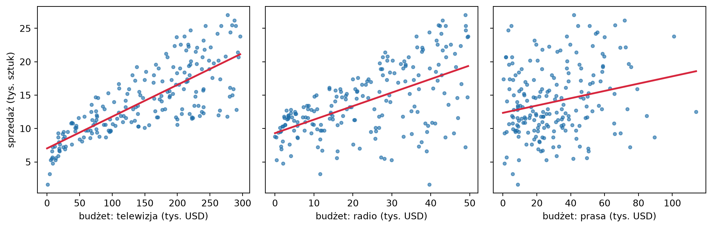
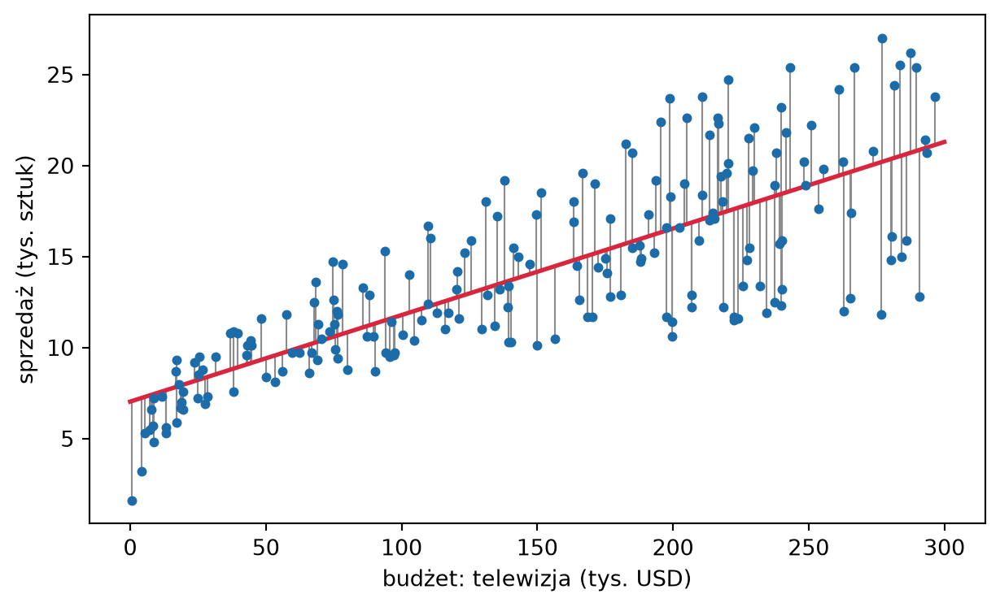

Regresja liniowa pojawiała się w tej książce kilka razy, zawsze jako punkt odniesienia. W sekcji 1.9 była przykładem metody parametrycznej: niezależnie od liczby obserwacji szacujemy w niej tyle samo współczynników. W rozdziale 4 dopasowywaliśmy wielomiany gotową funkcją biblioteki NumPy, a w sekcji 4.8 stwierdziliśmy, że trafne założenie liniowości daje predyktor nieobciążony o wariancji rzędu \(\sigma^2(p+1)/n\), bez względu na to, jak trudna byłaby ta sama zależność dla metody \(k\)-NN. W tym rozdziale wyprowadzamy te fakty.
Model liniowy służy jednak nie tylko predykcji. Jego współczynniki mają prostą interpretację, a przy dodatkowych założeniach umiemy policzyć, jak bardzo zmieniłyby się, gdybyśmy wylosowali inną próbę. Daje to narzędzia wnioskowania w sensie sekcji 1.7: przedziały ufności i testy hipotez. Będziemy je rozwijać na przykładzie danych Advertising(James i in. 2023, rozdz. 2.1). Dla \(200\) rynków zbiór podaje budżety reklamy produktu w telewizji (TV), radiu (radio) i prasie (newspaper), w tysiącach dolarów, oraz sprzedaż produktu (sales) w tysiącach sztuk. Interesują nas trzy pytania: czy wydatki na reklamę w ogóle wiążą się ze sprzedażą, które media się do tego przyczyniają i jak dokładnie możemy przewidzieć sprzedaż przy zadanym budżecie. Odpowiedź na każde z nich wymaga nie tylko dopasowania modelu, ale też oceny, ile w dopasowaniu jest przypadku.
6.1 Model liniowy
Niech \(\X = (X_1, \dots, X_p)\) będzie wektorem cech, a \(Y\) wynikiem. Model regresji liniowej zakłada, że \[
Y = \beta_0 + \beta_1 X_1 + \dots + \beta_p X_p + \varepsilon,
\qquad \E[\varepsilon \mid \X] = 0 ,
\tag{6.1}\] czyli że funkcja regresji \(\fopt(\x) = \E[Y \mid \X = \x]\) jest funkcją liniową (ściślej: afiniczną) cech. Liczby \(\beta_0, \dots, \beta_p\) są nieznanymi parametrami. Współczynnik \(\beta_0\) nazywamy wyrazem wolnym (ang. intercept), a \(\beta_j\) dla \(j \ge 1\) – współczynnikiem regresji przy cesze \(X_j\).
Założenie (6.1) można czytać na dwa sposoby. Pierwszy to twierdzenie o świecie: funkcja regresji naprawdę należy do klasy \[
\mathcal{F}_{\mathrm{lin}} = \big\{\, f(\x) = \beta_0 + \beta_1 x_1 +
\dots + \beta_p x_p : \beta_0, \dots, \beta_p \in \R \,\big\}.
\] Wtedy błąd aproksymacji z sekcji 4.6 jest zerowy, a cały błąd redukowalny pochodzi ze skończoności próby. Drugi sposób nie wymaga tej wiary. Niezależnie od tego, czym jest \(\fopt\), w klasie \(\mathcal{F}_{\mathrm{lin}}\) istnieje element \(f_{\mathcal{F}}\) najbliższy \(\fopt\) w sensie średniego kwadratu, i to on jest celem estymacji. Dla jednej cechy jego współczynnik kierunkowy wynosi \(\Cov(X, Y)/\Var X\) (Zadanie 6.1). Rachunki z sekcji 6.2 mają sens przy obu odczytaniach. Wyniki z sekcji 6.3 i 6.4 opierają się na pierwszym.
Liniowość dotyczy parametrów, a nie cech. Regresja wielomianowa z rozdziału 4 jest modelem liniowym z cechami \(x, x^2, \dots, x^d\): predykcja jest kombinacją liniową współczynników, choć jest nieliniową funkcją \(x\). Wszystko, co wyprowadzimy dla modelu (6.1), stosuje się więc do niej bez zmian.
Współczynnik \(\beta_j\) mówi, o ile zmienia się średni wynik, gdy cecha \(X_j\) rośnie o jednostkę, a pozostałe cechy się nie zmieniają. Porównujemy więc dwie grupy obiektów, które różnią się tylko wartością \(X_j\). Ta interpretacja opisuje zależność w populacji, a nie skutek interwencji. Rynki, na których budżet telewizyjny jest wyższy o tysiąc dolarów przy tych samych budżetach radiowym i prasowym, sprzedają przeciętnie o \(1000\,\beta_1\) sztuk więcej. Czy podniesienie budżetu na danym rynku spowodowałoby taki wzrost, zależy od tego, co jeszcze różni te rynki, a tego model nie widzi.
Kod
import numpy as npimport pandas as pdimport matplotlib.pyplot as pltreklama = pd.read_csv("../dane/Advertising.csv", index_col=0)media = ["TV", "radio", "newspaper"]podpisy = {"TV": "telewizja", "radio": "radio", "newspaper": "prasa"}fig, osie = plt.subplots(1, 3, figsize=(11, 3.6), sharey=True)for ax, medium inzip(osie, media): x, y = reklama[medium].to_numpy(), reklama["sales"].to_numpy() nachylenie, wyraz_wolny = np.polyfit(x, y, 1) siatka = np.linspace(0, x.max(), 2) ax.scatter(x, y, s=12, color="#1B6CA8", alpha=0.6) ax.plot(siatka, wyraz_wolny + nachylenie * siatka, color="#D7263D", lw=2) ax.set_xlabel(f"budżet: {podpisy[medium]} (tys. USD)")osie[0].set_ylabel("sprzedaż (tys. sztuk)")plt.tight_layout()plt.show()

Rysunek 6.1: Dane Advertising: sprzedaż w zależności od budżetu reklamy w telewizji, radiu i prasie dla 200 rynków. Linie to proste regresji sprzedaży względem każdego medium osobno.
Na rysunku 6.1 sprzedaż wyraźnie rośnie z budżetem telewizyjnym, słabiej z radiowym, a z prasowym ledwie. Rozrzut wokół prostej dla telewizji rośnie przy tym z budżetem. Każdy z tych wykresów pokazuje jednak tylko jedną cechę naraz. Pytanie, co wnosi prasa, gdy znamy już budżety telewizyjny i radiowy, wymaga modelu z trzema cechami jednocześnie.
6.2 Metoda najmniejszych kwadratów
Mamy zbiór uczący \(\mathcal{D} = \{(\x_1, y_1), \dots, (\x_n, y_n)\}\), gdzie \(\x_i = (x_{i1}, \dots, x_{ip})\). Wygodnie jest zapisać go macierzowo. Macierz projektowa\(\X\) ma wymiary \(n \times (p+1)\): jej \(i\)-ty wiersz to \((1, x_{i1}, \dots, x_{ip})\), a pierwsza kolumna złożona z jedynek odpowiada wyrazowi wolnemu. Wyniki tworzą wektor \(\y = (y_1, \dots, y_n)^\top\), a współczynniki – wektor \(\bbeta = (\beta_0, \dots, \beta_p)^\top\). Predykcje modelu w punktach uczących to wtedy \(\X\bbeta\), a suma kwadratów reszt wynosi \[
\mathrm{RSS}(\bbeta) = \sum_{i=1}^{n} \big(y_i - \beta_0 - \beta_1 x_{i1}
- \dots - \beta_p x_{ip}\big)^2 = \|\y - \X\bbeta\|^2 .
\tag{6.2}\]Metoda najmniejszych kwadratów (MNK) wybiera \(\bbeta\) minimalizujące \(\mathrm{RSS}\). Jest to minimalizacja ryzyka empirycznego (1.10) przy stracie kwadratowej w klasie \(\mathcal{F}_{\mathrm{lin}}\), bo \(\mathrm{RSS}/n\) jest błędem na zbiorze uczącym.
Rozpisując kwadrat normy, \[
\mathrm{RSS}(\bbeta) = \y^\top\y - 2\bbeta^\top\X^\top\y
+ \bbeta^\top\X^\top\X\bbeta .
\] Jest to funkcja kwadratowa \(\bbeta\), a jej gradient wynosi \(-2\X^\top\y + 2\X^\top\X\bbeta\). Przyrównując go do zera, otrzymujemy równania normalne\[
\X^\top\X\,\bbeta = \X^\top\y .
\tag{6.3}\]
Twierdzenie 6.1 (Estymator najmniejszych kwadratów) Jeśli kolumny macierzy \(\X\) są liniowo niezależne, to macierz \(\X^\top\X\) jest odwracalna, a \(\mathrm{RSS}\) ma dokładnie jedno minimum w punkcie \[
\widehat{\bbeta} = (\X^\top\X)^{-1}\X^\top\y .
\tag{6.4}\]
Dowód. Dla dowolnego wektora \(\mathbf{v}\) mamy \(\mathbf{v}^\top\X^\top\X\mathbf{v} = \|\X\mathbf{v}\|^2\). Jeśli \(\X^\top\X\mathbf{v} = \mathbf 0\), to \(\|\X\mathbf{v}\|^2 = 0\), czyli \(\X\mathbf{v} = \mathbf 0\), a z liniowej niezależności kolumn \(\mathbf{v} = \mathbf 0\). Macierz \(\X^\top\X\) jest więc odwracalna, a \(\widehat{\bbeta}\) z (6.4) spełnia równania normalne.
Dla dowolnego \(\bbeta\) zapiszmy \(\y - \X\bbeta = (\y - \X\widehat{\bbeta}) + \X(\widehat{\bbeta} - \bbeta)\). Iloczyn mieszany \(2(\widehat{\bbeta} - \bbeta)^\top\X^\top(\y - \X\widehat{\bbeta})\) znika na mocy równań normalnych, więc \[
\mathrm{RSS}(\bbeta) = \mathrm{RSS}(\widehat{\bbeta})
+ \|\X(\widehat{\bbeta} - \bbeta)\|^2 .
\] Drugi składnik jest dodatni dla \(\bbeta \ne \widehat{\bbeta}\), bo kolumny \(\X\) są liniowo niezależne.
Liniowa niezależność kolumn wymaga w szczególności, by \(n \ge p + 1\). Gdy cech jest więcej niż obserwacji, równania normalne mają nieskończenie wiele rozwiązań i wiele z nich daje \(\mathrm{RSS} = 0\). Tak było z wielomianami w sekcji 4.1: gdy \(d + 1\) osiągało liczbę różnych wartości \(x_i\), wielomian przechodził przez wszystkie punkty.
Dla jednej cechy (\(p = 1\)) równania normalne mają postać \(\sum_i (y_i - \beta_0 - \beta_1 x_i) = 0\) i \(\sum_i x_i(y_i - \beta_0 - \beta_1 x_i) = 0\), skąd \[
\widehat\beta_1 = \frac{\sum_{i=1}^n (x_i - \bar x)(y_i - \bar y)}
{\sum_{i=1}^n (x_i - \bar x)^2},
\qquad
\widehat\beta_0 = \bar y - \widehat\beta_1 \bar x
\tag{6.5}\] (Zadanie 6.1). Współczynnik kierunkowy to iloraz kowariancji z próby przez wariancję z próby, czyli próbkowy odpowiednik \(\Cov(X, Y)/\Var X\). Druga równość mówi, że prosta regresji przechodzi przez punkt \((\bar x, \bar y)\).
6.2.1 Geometria najmniejszych kwadratów
Wektor predykcji \(\X\bbeta\) jest kombinacją liniową kolumn \(\X\). Gdy \(\bbeta\) przebiega \(\R^{p+1}\), wektor ten przebiega przestrzeń kolumn \(\mathcal{C}(\X)\) – podprzestrzeń \(\R^n\) wymiaru \(p + 1\). Minimalizacja \(\|\y - \X\bbeta\|\) to więc szukanie punktu tej podprzestrzeni najbliższego \(\y\), czyli rzutu ortogonalnego\(\y\) na \(\mathcal{C}(\X)\). Równania normalne zapisane jako \[
\X^\top(\y - \X\widehat{\bbeta}) = \mathbf 0
\] mówią to samo: wektor reszt \(\mathbf{e} = \y - \widehat\y\), gdzie \(\widehat\y = \X\widehat{\bbeta}\), jest prostopadły do każdej kolumny \(\X\). Z prostopadłości do kolumny jedynek wynika, że reszty sumują się do zera, a z prostopadłości do pozostałych kolumn – że w próbie są nieskorelowane z każdą cechą. Dopasowanie wyczerpało liniową informację o \(\y\), jaką niosą cechy.
Wektor predykcji jest liniową funkcją wyników: \[
\widehat\y = \mathbf H\y,
\qquad
\mathbf H = \X(\X^\top\X)^{-1}\X^\top .
\tag{6.6}\] Macierz \(\mathbf H\) nazywa się macierzą daszkową (ang. hat matrix), bo „nakłada daszek” na \(\y\). Jest macierzą rzutu ortogonalnego: symetryczną (\(\mathbf H^\top = \mathbf H\)) i idempotentną (\(\mathbf H^2 = \mathbf H\)), bo rzut wektora, który już leży w podprzestrzeni, nic nie zmienia. Macierz \(\mathbf I - \mathbf H\) rzutuje na dopełnienie ortogonalne \(\mathcal{C}(\X)\) i daje reszty, \(\mathbf e = (\mathbf I - \mathbf H)\y\). Ślad \(\mathbf H\) jest równy wymiarowi podprzestrzeni, na którą rzutuje: \[
\operatorname{tr}\mathbf H
= \operatorname{tr}\big((\X^\top\X)^{-1}\X^\top\X\big)
= \operatorname{tr}\mathbf I_{p+1} = p + 1 ,
\tag{6.7}\] gdzie skorzystaliśmy z równości \(\operatorname{tr}(\mathbf{AB}) =
\operatorname{tr}(\mathbf{BA})\). Ponieważ \(\widehat\y\) i \(\mathbf e\) są prostopadłe, zachodzi twierdzenie Pitagorasa: \(\|\y\|^2 = \|\widehat\y\|^2 + \|\mathbf e\|^2\).
AdnotacjaŚlad jako liczba parametrów
W sekcji 5.4 opisaliśmy metody, dla których \(\widehat\y = \mathbf S\y\). Metoda najmniejszych kwadratów do nich należy, z \(\mathbf S = \mathbf H\). Dla regresji \(k\)-NN na przekątnej \(\mathbf S\) stoi \(1/k\), więc \(\operatorname{tr}\mathbf S = n/k\) – to dokładnie efektywna liczba parametrów, którą w rozdziale 4 mierzyliśmy elastyczność tej metody. Dla MNK ślad \(\mathbf H\) to \(p + 1\), czyli liczba współczynników. Ślad macierzy \(\mathbf S\) jest więc wspólną miarą elastyczności metod liniowych względem \(\y\)(Hastie i in. 2009, rozdz. 7.6). Element przekątny \(h_{ii}\) mówi, jaką wagę predykcja w punkcie \(\x_i\) przypisuje własnemu wynikowi \(y_i\); nazywa się go dźwignią obserwacji \(i\) (Zadanie 6.2).
WskazówkaWzór to nie algorytm
Wzór (6.4) opisuje rozwiązanie, ale nie jest dobrym sposobem jego obliczania. Utworzenie \(\X^\top\X\) podnosi do kwadratu wskaźnik uwarunkowania macierzy, czyli czynnik, o jaki błędy zaokrągleń mogą się wzmocnić przy rozwiązywaniu układu. Biblioteki rozkładają więc \(\X\), a nie \(\X^\top\X\). W rozkładzie QR, \(\X = \mathbf{Q}\mathbf{R}\) z ortonormalnymi kolumnami \(\mathbf Q\) i trójkątną \(\mathbf R\), równania normalne sprowadzają się do układu trójkątnego \(\mathbf R\bbeta = \mathbf Q^\top\y\). Funkcja np.linalg.lstsq korzysta z rozkładu według wartości osobliwych.
Dla wielomianu stopnia \(10\) na \(50\) punktach z przedziału \([0, 1]\) różnica jest dramatyczna:
Przy podwójnej precyzji, czyli około \(16\) cyfrach znaczących, wskaźnik rzędu \(10^{14}\) zostawia w rozwiązaniu najwyżej dwie wiarygodne cyfry. Dlatego w rozdziale 4 używaliśmy funkcji Polynomial.fit, która przed dopasowaniem przeskalowuje \(x\) do przedziału \([-1, 1]\).
6.2.2 Dopasowanie do danych Advertising
Zacznijmy od regresji sprzedaży względem budżetu telewizyjnego. Rysunek 6.2 pokazuje prostą najmniejszych kwadratów i reszty, czyli pionowe odcinki, których kwadraty minimalizujemy.
Kod
def dopasuj(cechy, dane=reklama):"""Współczynniki MNK dla regresji sprzedaży względem podanych cech.""" X = np.column_stack([np.ones(len(dane)), dane[cechy].to_numpy()]) beta, *_ = np.linalg.lstsq(X, dane["sales"].to_numpy(), rcond=None)return betab0, b1 = dopasuj(["TV"])x, y = reklama["TV"].to_numpy(), reklama["sales"].to_numpy()fig, ax = plt.subplots(figsize=(6.5, 4.0))ax.vlines(x, y, b0 + b1 * x, color="0.55", lw=0.8)ax.scatter(x, y, s=12, color="#1B6CA8", zorder=3)siatka = np.array([0, 300])ax.plot(siatka, b0 + b1 * siatka, color="#D7263D", lw=2)ax.set_xlabel("budżet: telewizja (tys. USD)")ax.set_ylabel("sprzedaż (tys. sztuk)")plt.tight_layout()plt.show()

Rysunek 6.2: Regresja sprzedaży względem budżetu telewizyjnego metodą najmniejszych kwadratów. Pionowe odcinki to reszty \(e_i = y_i - \widehat y_i\); prosta minimalizuje sumę ich kwadratów.
Otrzymujemy \(\widehat\beta_0 \approx 7{,}03\) i \(\widehat\beta_1 \approx 0{,}0475\). Każdy dodatkowy tysiąc dolarów budżetu telewizyjnego wiąże się przeciętnie z \(47{,}5\) sztukami sprzedanego produktu więcej. Wyraz wolny to przewidywana sprzedaż przy zerowym budżecie telewizyjnym. Tutaj ma on sens, bo w danych są rynki z budżetem bliskim zera.
Teraz dopasujmy model ze wszystkimi trzema mediami i porównajmy jego współczynniki ze współczynnikami trzech regresji z jedną cechą.
Kod
wielokrotna = dopasuj(media)proste = [dopasuj([m])[1] for m in media]pd.DataFrame( {"regresja z jedną cechą": proste, "regresja z trzema cechami": wielokrotna[1:]}, index=media,).round(4)
regresja z jedną cechą
regresja z trzema cechami
TV
0.0475
0.0458
radio
0.2025
0.1885
newspaper
0.0547
-0.0010
Współczynniki przy telewizji i radiu prawie się nie zmieniają. Przy prasie zmienia się wszystko: w regresji z jedną cechą tysiąc dolarów wiąże się z \(55\) sztukami więcej, w regresji z trzema cechami – z praktycznie zerową zmianą, a nawet z lekkim spadkiem. Obie liczby są poprawne, ale odpowiadają na różne pytania. Pierwsza porównuje rynki o różnym budżecie prasowym bez względu na pozostałe budżety. Druga porównuje rynki o różnym budżecie prasowym i tych samych budżetach telewizyjnym i radiowym. Korelacja budżetów prasowego i radiowego w próbie wynosi \(0{,}35\): tam, gdzie dużo wydaje się na radio, wydaje się też więcej na prasę. W regresji z jedną cechą prasa przejmuje więc część zasługi radia. Współczynnik w regresji wielokrotnej jest równy współczynnikowi regresji \(\y\) względem tej części cechy, której nie da się liniowo przewidzieć z pozostałych cech (Zadanie 6.8).
6.3 Własności estymatora MNK
Dopasowanie metodą najmniejszych kwadratów to rachunek na danych. Aby powiedzieć, jak daleko \(\widehat{\bbeta}\) może leżeć od \(\bbeta\), potrzebujemy modelu losowości. Tak jak w sekcji 4.4 przy metodzie \(k\)-NN, przyjmujemy ustalony układ: punkty \(\x_1, \dots, \x_n\) traktujemy jako ustalone, a losowe są tylko wyniki. Formalnie oznacza to warunkowanie względem cech; wszystkie wartości oczekiwane w tej sekcji liczymy przy danym \(\X\).
Definicja 6.1 (Założenia modelu liniowego) Wektor wyników ma postać \(\y = \X\bbeta + \boldsymbol\varepsilon\), gdzie macierz \(\X\) jest ustalona, ma liniowo niezależne kolumny, oraz
(Z1) \(\E\boldsymbol\varepsilon = \mathbf 0\),
(Z2) \(\Cov\boldsymbol\varepsilon = \sigma^2\mathbf I\), czyli błędy są nieskorelowane i mają jednakową wariancję \(\sigma^2\).
Założenie (Z1) to pierwsze odczytanie modelu z sekcji 6.1: funkcja regresji jest liniowa. Założenie (Z2) wyklucza między innymi sytuację z rysunku 6.1, w której rozrzut wokół prostej rośnie z budżetem.
Dowód. Z (6.4), \[
\widehat{\bbeta} = (\X^\top\X)^{-1}\X^\top(\X\bbeta + \boldsymbol\varepsilon)
= \bbeta + \mathbf A\boldsymbol\varepsilon,
\qquad \mathbf A = (\X^\top\X)^{-1}\X^\top .
\] Macierz \(\mathbf A\) jest ustalona, więc \(\E\widehat{\bbeta} = \bbeta + \mathbf A\,\E\boldsymbol\varepsilon = \bbeta\). Dla wektora losowego \(\mathbf A\boldsymbol\varepsilon\) zachodzi \(\Cov(\mathbf A\boldsymbol\varepsilon) =
\mathbf A\Cov(\boldsymbol\varepsilon)\mathbf A^\top\), więc \[
\Cov\widehat{\bbeta} = \sigma^2\mathbf A\mathbf A^\top
= \sigma^2(\X^\top\X)^{-1}\X^\top\X(\X^\top\X)^{-1}
= \sigma^2(\X^\top\X)^{-1} .
\]
Estymator MNK jest więc nieobciążony, a jego rozrzut zależy od dwóch rzeczy: od poziomu szumu \(\sigma^2\) i od układu punktów, zapisanego w \(\X^\top\X\). Dla jednej cechy, odwracając macierz \(2 \times 2\), otrzymujemy \[
\Var\widehat\beta_1 = \frac{\sigma^2}{\sum_{i=1}^n (x_i - \bar x)^2},
\qquad
\Var\widehat\beta_0 = \sigma^2\Big(\frac1n
+ \frac{\bar x^2}{\sum_{i=1}^n (x_i - \bar x)^2}\Big)
\tag{6.9}\] (Zadanie 6.1). Nachylenie jest wyznaczone tym dokładniej, im szerzej rozrzucone są punkty \(x_i\). Gdy wszystkie leżą blisko siebie, niewielki szum w wynikach wystarcza, by mocno przechylić prostą. Ponieważ \(\sum_i (x_i - \bar x)^2 = n s_x^2\), gdzie \(s_x^2\) jest wariancją z próby, odchylenie standardowe \(\widehat\beta_1\) maleje jak \(\sigma/(s_x\sqrt n)\).
Rysunek 6.3 pokazuje to na symulacji. Punkty \(x_i\), \(n = 30\), wylosowaliśmy raz z rozkładu jednostajnego na \([0, 10]\) i trzymamy je ustalone. W każdej z \(10\,000\) prób losujemy nowe wyniki \(y_i = 1 + 0{,}5\,x_i + \varepsilon_i\), z \(\varepsilon_i \sim
\Nrozk(0, 1{,}5^2)\), i dopasowujemy prostą.
Rysunek 6.3: Estymator MNK w \(10\,000\) próbach z modelu \(y_i = 1 + 0{,}5\,x_i + \varepsilon_i\) przy ustalonych punktach \(x_i\) (\(n = 30\), \(\sigma = 1{,}5\)). Po lewej: proste dopasowane do 20 prób (cienkie linie) i prawdziwa prosta (przerywana). Po prawej: histogram \(\widehat\beta_1\) na tle gęstości rozkładu normalnego o średniej \(\beta_1\) i wariancji z (6.9).
Średnia \(\widehat\beta_1\) po próbach jest równa \(\beta_1 = 0{,}5\) z dokładnością do szumu symulacji, a histogram pokrywa się z gęstością o wariancji (6.9). Kształt tej gęstości jest normalny, bo błędy w symulacji są normalne; twierdzenie 6.2 mówi tylko o średniej i wariancji.
6.3.1 Wariancja predykcji
Predykcja w punkcie \(\x_0\) to \(\widehat f(\x_0) =
\tilde\x_0^\top\widehat{\bbeta}\), gdzie \(\tilde\x_0 = (1, \x_0)\) jest wektorem cech uzupełnionym o jedynkę. Z twierdzenia 6.2 jest ona nieobciążonym estymatorem \(\fopt(\x_0) = \tilde\x_0^\top\bbeta\) o wariancji \[
\Var\widehat f(\x_0) = \sigma^2\,\tilde\x_0^\top(\X^\top\X)^{-1}\tilde\x_0 .
\tag{6.10}\] W punktach uczących macierz kowariancji wektora predykcji to \(\Cov(\mathbf H\y) = \sigma^2\mathbf H\mathbf H^\top = \sigma^2\mathbf H\), więc wariancja predykcji w \(\x_i\) wynosi \(\sigma^2 h_{ii}\). Średnio po punktach uczących, z (6.7), \[
\frac1n\sum_{i=1}^n \Var\widehat f(\x_i)
= \frac{\sigma^2}{n}\operatorname{tr}\mathbf H
= \sigma^2\,\frac{p+1}{n} .
\tag{6.11}\] To jest fakt, na który powoływaliśmy się w sekcji 4.8. Jeśli model liniowy jest trafny, predyktor MNK nie ma obciążenia, a jego wariancja maleje jak \(1/n\) ze stałą proporcjonalną do liczby współczynników, bez względu na wymiar cech. Porównajmy to z wariancją \(\sigma^2/k\) regresji \(k\)-NN w ustalonym układzie (4.6). Można ją zapisać jako \(\sigma^2 (n/k)/n\): obie metody płacą wariancją \(\sigma^2\) razy efektywna liczba parametrów podzielona przez \(n\). Różnica leży w obciążeniu. Metoda \(k\)-NN, żeby mieć małe obciążenie, potrzebuje małych otoczeń, czyli wielu efektywnych parametrów. Model liniowy, jeśli jest trafny, ma zerowe obciążenie przy \(p + 1\) parametrach.
Wzór (6.11) dotyczy punktów uczących. Dla nowego punktu \(\X_0\) z tego samego rozkładu co cechy uczące wariancja jest nieco większa, ale przy dużym \(n\) również bliska \(\sigma^2(p+1)/n\). Wtedy bowiem \(\X^\top\X \approx n\,\E[\tilde\X_0\tilde\X_0^\top]\), więc średnia wartość \(\tilde\X_0^\top(\X^\top\X)^{-1}\tilde\X_0\) jest bliska \(\operatorname{tr}\mathbf I_{p+1}/n\).
6.3.2 Estymacja wariancji błędu
Wzory (6.8) i (6.10) zawierają nieznane \(\sigma^2\). Naturalnym kandydatem na jego estymator są reszty, ale są one systematycznie mniejsze od błędów: dopasowanie dostosowało się do tych samych danych.
Twierdzenie 6.3 (Wartość oczekiwana sumy kwadratów reszt) Przy założeniach (Z1)–(Z2) \[
\E\,\mathrm{RSS}(\widehat{\bbeta}) = \sigma^2(n - p - 1),
\] więc \[
\widehat\sigma^2 = \frac{\mathrm{RSS}(\widehat{\bbeta})}{n - p - 1}
\tag{6.12}\] jest nieobciążonym estymatorem \(\sigma^2\).
Dowód. Ponieważ \((\mathbf I - \mathbf H)\X = \mathbf 0\), wektor reszt to \(\mathbf e = (\mathbf I - \mathbf H)\y
= (\mathbf I - \mathbf H)\boldsymbol\varepsilon\). Macierz \(\mathbf I - \mathbf H\) jest symetryczna i idempotentna, więc \(\mathrm{RSS} = \mathbf e^\top\mathbf e
= \boldsymbol\varepsilon^\top(\mathbf I - \mathbf H)\boldsymbol\varepsilon\). Dla ustalonej macierzy \(\mathbf M\) mamy \(\E[\boldsymbol\varepsilon^\top\mathbf M\boldsymbol\varepsilon]
= \sum_{i,j} M_{ij}\E[\varepsilon_i\varepsilon_j]
= \sigma^2\operatorname{tr}\mathbf M\), a \(\operatorname{tr}(\mathbf I - \mathbf H) = n - (p + 1)\) z (6.7).
Dowód pokazuje, skąd bierze się mianownik \(n - p - 1\). Wektor błędów ma \(n\) współrzędnych, ale rzut na \(\mathcal{C}(\X)\) „pochłania” jego składową w \(p + 1\) kierunkach i przenosi ją do predykcji. W resztach zostaje składowa w pozostałych \(n - p - 1\) kierunkach, które nazywa się resztowymi stopniami swobody. Wariancja z próby z mianownikiem \(n - 1\) jest szczególnym przypadkiem \(p = 0\) (Zadanie 6.5). Błąd na zbiorze uczącym, \(\mathrm{RSS}/n\), ma wartość oczekiwaną \(\sigma^2(1 - (p+1)/n)\), czyli zaniża nawet błąd nieredukowalny. To jest optymizm błędu uczącego z sekcji 4.1, który dla MNK można policzyć dokładnie (Zadanie 6.4).
6.3.3 Twierdzenie Gaussa–Markowa
Estymator MNK jest nieobciążony, ale czy jest najlepszy? Odpowiedź zależy od tego, z czym go porównujemy. Estymator \(\tilde{\bbeta}\) nazywamy liniowym, jeśli \(\tilde{\bbeta} = \mathbf C\y\) dla macierzy \(\mathbf C\) zależnej tylko od \(\X\). Estymator MNK jest liniowy, z \(\mathbf C = (\X^\top\X)^{-1}\X^\top\).
Twierdzenie 6.4 (Gaussa–Markowa) Przy założeniach (Z1)–(Z2) niech \(\tilde{\bbeta} = \mathbf C\y\) będzie dowolnym liniowym estymatorem \(\bbeta\) nieobciążonym dla każdej wartości \(\bbeta\). Wtedy macierz \(\Cov\tilde{\bbeta} - \Cov\widehat{\bbeta}\) jest dodatnio półokreślona. W szczególności dla każdego wektora \(\mathbf c\)\[
\Var(\mathbf c^\top\tilde{\bbeta}) \ge \Var(\mathbf c^\top\widehat{\bbeta}) .
\]
Dowód. Niech \(\mathbf A = (\X^\top\X)^{-1}\X^\top\) i \(\mathbf D = \mathbf C - \mathbf A\). Nieobciążoność oznacza \(\E\tilde{\bbeta} = \mathbf C\X\bbeta = \bbeta\) dla każdego \(\bbeta\), czyli \(\mathbf C\X = \mathbf I\). Ponieważ \(\mathbf A\X = \mathbf I\), mamy \(\mathbf D\X = \mathbf 0\). Stąd \(\mathbf A\mathbf D^\top = (\X^\top\X)^{-1}(\mathbf D\X)^\top = \mathbf 0\) i \[
\Cov\tilde{\bbeta} = \sigma^2\mathbf C\mathbf C^\top
= \sigma^2(\mathbf A + \mathbf D)(\mathbf A + \mathbf D)^\top
= \sigma^2\mathbf A\mathbf A^\top + \sigma^2\mathbf D\mathbf D^\top
= \Cov\widehat{\bbeta} + \sigma^2\mathbf D\mathbf D^\top .
\] Macierz \(\mathbf D\mathbf D^\top\) jest dodatnio półokreślona, bo \(\mathbf c^\top\mathbf D\mathbf D^\top\mathbf c = \|\mathbf D^\top\mathbf c\|^2
\ge 0\).
Estymator MNK jest więc najlepszym liniowym estymatorem nieobciążonym (ang. best linear unbiased estimator, BLUE) (Hastie i in. 2009, rozdz. 3.2.2). Dotyczy to też każdej kombinacji liniowej współczynników, w tym predykcji \(\tilde\x_0^\top\widehat{\bbeta}\) w dowolnym punkcie. Dla modelu z samym wyrazem wolnym twierdzenie mówi, że średnia z próby jest najlepszą nieobciążoną średnią ważoną obserwacji (Zadanie 6.6).
AdnotacjaCzego twierdzenie nie mówi
Twierdzenie porównuje MNK tylko z estymatorami liniowymi i nieobciążonymi. W sekcji 4.3 widzieliśmy, że estymator ściągający \(c\bar Y\), obciążony, może mieć wyraźnie mniejszy błąd średniokwadratowy niż nieobciążona średnia \(\bar Y\). Ten sam mechanizm działa dla współczynników regresji. Założenie (Z2) też jest istotne: gdy błędy mają różne wariancje, lepiej ważyć obserwacje odwrotnościami tych wariancji, a MNK traktuje wszystkie jednakowo.
6.4 Wnioskowanie o parametrach
Twierdzenie 6.2 podaje średnią i wariancję \(\widehat{\bbeta}\). Żeby z jednej próby zbudować przedział ufności albo policzyć \(p\)-wartość, potrzebujemy całego rozkładu. Dokładamy więc trzecie założenie:
(Z3) \(\boldsymbol\varepsilon \sim \Nrozk(\mathbf 0, \sigma^2\mathbf I)\), czyli błędy są niezależne i mają rozkład normalny.
Twierdzenie 6.5 (Rozkłady w modelu liniowym z normalnymi błędami) Przy założeniach (Z1)–(Z3):
\(\mathrm{RSS}/\sigma^2\) ma rozkład \(\chi^2\) z \(n - p - 1\) stopniami swobody;
\(\widehat{\bbeta}\) i \(\mathrm{RSS}\) są niezależne.
Dowód (szkic). Część (a): \(\widehat{\bbeta} = \bbeta + \mathbf A\boldsymbol\varepsilon\) jest przekształceniem liniowym wektora gaussowskiego, więc ma rozkład normalny, a jego parametry podaje twierdzenie 6.2.
Części (b) i (c) wynikają z geometrii. Wybierzmy bazę ortonormalną \(\R^n\), w której pierwsze \(p + 1\) wektorów rozpina \(\mathcal{C}(\X)\), a pozostałe \(n - p - 1\) – jej dopełnienie ortogonalne. Niech \(\mathbf Q\) będzie macierzą ortogonalną o tych wektorach w kolumnach, a \(\mathbf z = \mathbf Q^\top\boldsymbol\varepsilon\) wektorem współrzędnych błędów w nowej bazie. Rozkład \(\Nrozk(\mathbf 0, \sigma^2\mathbf I)\) jest sferycznie symetryczny, więc obrót go nie zmienia: \(\mathbf z \sim \Nrozk(\mathbf 0, \sigma^2\mathbf I)\), czyli współrzędne \(z_1, \dots, z_n\) są niezależne. Składowa \(\mathbf H\boldsymbol\varepsilon\) zależy tylko od \(z_1, \dots, z_{p+1}\), a reszty \(\mathbf e = (\mathbf I - \mathbf H)\boldsymbol\varepsilon\) – tylko od \(z_{p+2}, \dots, z_n\). Stąd \(\mathrm{RSS} = \|\mathbf e\|^2 =
z_{p+2}^2 + \dots + z_n^2\) jest sumą kwadratów \(n - p - 1\) niezależnych zmiennych \(\Nrozk(0, \sigma^2)\), co daje (b). Ponadto \(\widehat{\bbeta} - \bbeta = \mathbf A\boldsymbol\varepsilon =
\mathbf A\mathbf H\boldsymbol\varepsilon\) (bo \(\X^\top\mathbf H = \X^\top\)) zależy tylko od \(z_1, \dots, z_{p+1}\), co daje (c). Szczegółowy wykład zawierają Seber i Lee (2003, rozdz. 2–3).
6.4.1 Błędy standardowe i przedziały ufności
Z części (a) wariancja \(\widehat\beta_j\) to \(\sigma^2 v_{jj}\), gdzie \(v_{jj}\) jest \(j\)-tym elementem przekątnej \((\X^\top\X)^{-1}\) (numerując od zera). Zastępując \(\sigma\) przez \(\widehat\sigma\) z (6.12), otrzymujemy błąd standardowy\[
\mathrm{SE}(\widehat\beta_j) = \widehat\sigma\sqrt{v_{jj}} .
\] Statystyka \[
T_j = \frac{\widehat\beta_j - \beta_j}{\mathrm{SE}(\widehat\beta_j)}
= \frac{(\widehat\beta_j - \beta_j)/(\sigma\sqrt{v_{jj}})}
{\sqrt{\mathrm{RSS}/\big(\sigma^2(n-p-1)\big)}}
\tag{6.13}\] jest ilorazem zmiennej o rozkładzie \(\Nrozk(0, 1)\) przez pierwiastek z niezależnej od niej zmiennej \(\chi^2_{n-p-1}\) podzielonej przez liczbę stopni swobody. Taki iloraz ma z definicji rozkład \(t\) Studenta z \(n - p - 1\) stopniami swobody. Nie zależy on od nieznanych \(\bbeta\) i \(\sigma\), więc \[
\Prob\big(|T_j| \le t_{n-p-1}\big) = 1 - \alpha ,
\] gdzie \(t_{n-p-1}\) oznacza kwantyl rzędu \(1 - \alpha/2\) tego rozkładu. Przekształcając nierówność, dostajemy przedział ufności dla \(\beta_j\) na poziomie \(1 - \alpha\): \[
\Big[\,\widehat\beta_j - t_{n-p-1}\,\mathrm{SE}(\widehat\beta_j),\;
\widehat\beta_j + t_{n-p-1}\,\mathrm{SE}(\widehat\beta_j)\,\Big].
\tag{6.14}\] Zastąpienie \(\sigma\) oszacowaniem kosztuje: rozkład \(t\) ma grubsze ogony niż normalny, więc kwantyl jest większy od \(1{,}96\). Przy \(28\) stopniach swobody wynosi \(2{,}05\), przy dużej ich liczbie zbliża się do \(1{,}96\).
Losowy jest przedział, a nie \(\beta_j\). Poziom ufności \(95\%\) oznacza, że w \(95\%\) prób procedura daje przedział zawierający \(\beta_j\). O jednym obliczonym przedziale nie mówi nic więcej: \(\beta_j\) albo w nim leży, albo nie. Rysunek 6.4 pokazuje przedziały z 50 pierwszych prób symulacji z rysunku 6.3.
Rysunek 6.4: Przedziały ufności \(95\%\) dla \(\beta_1\) z 50 prób symulacji z rysunku 6.3. Czerwone przedziały nie zawierają prawdziwej wartości \(\beta_1 = 0{,}5\) (linia przerywana).
odsetek przedziałów pokrywających beta1 we wszystkich próbach: 0.953
We wszystkich \(10\,000\) próbach przedział pokrył \(\beta_1\) w około \(95\%\) przypadków. Tak musi być, gdy założenia (Z1)–(Z3) są spełnione. Co się dzieje, gdy nie są, sprawdza Zadanie 6.7.
Pakiet statsmodels liczy błędy standardowe, statystyki \(t\) i przedziały ufności za nas. Dla regresji sprzedaży względem budżetu telewizyjnego:
Kod
import statsmodels.api as smmodel_tv = sm.OLS(reklama["sales"], sm.add_constant(reklama[["TV"]])).fit()model_tv.summary().tables[1]
coef
std err
t
P>|t|
[0.025
0.975]
const
7.0326
0.458
15.360
0.000
6.130
7.935
TV
0.0475
0.003
17.668
0.000
0.042
0.053
Przedział ufności dla współczynnika przy telewizji to około \([0{,}042;\, 0{,}053]\). Tysiąc dolarów budżetu telewizyjnego wiąże się więc przeciętnie z \(42\) do \(53\) sztukami sprzedanego produktu więcej.
6.4.1.1 Przedział dla średniej i przedział predykcji
Pytanie „jaka jest przeciętna sprzedaż na rynkach o budżecie \(\x_0\)?” dotyczy liczby \(\fopt(\x_0) = \tilde\x_0^\top\bbeta\). Jej estymator \(\tilde\x_0^\top\widehat{\bbeta}\) ma wariancję (6.10), a przedział ufności buduje się tak samo jak (6.14), z \(\mathrm{SE}^2 = \widehat\sigma^2\,\tilde\x_0^\top(\X^\top\X)^{-1}\tilde\x_0\). Pytanie „ile sprzeda się na jednym nowym rynku o budżecie \(\x_0\)?” dotyczy zmiennej losowej \(Y_0 = \tilde\x_0^\top\bbeta + \varepsilon_0\). Błąd \(\varepsilon_0\) nowej obserwacji jest niezależny od próby, więc \[
\Var\big(Y_0 - \tilde\x_0^\top\widehat{\bbeta}\big)
= \sigma^2 + \sigma^2\,\tilde\x_0^\top(\X^\top\X)^{-1}\tilde\x_0 .
\] Jest to rozkład z rozdziału 2 w małej skali: pierwszy składnik to błąd nieredukowalny, drugi – redukowalny, który dla nieobciążonego estymatora składa się z samej wariancji. Przedział predykcji ma w miejscu \(\mathrm{SE}^2\) sumę obu składników, z \(\sigma^2\) zastąpionym przez \(\widehat\sigma^2\). Przy rosnącym \(n\) przedział ufności dla średniej kurczy się do punktu, a przedział predykcji nie zejdzie poniżej \(\pm 1{,}96\,\sigma\).
Dla rynku z budżetem telewizyjnym \(100\) i radiowym \(20\) tysięcy dolarów model z dwiema cechami przewiduje sprzedaż \(11{,}26\) tysiąca sztuk. Przeciętna sprzedaż na takich rynkach leży z ufnością \(95\%\) między \(10{,}99\) a \(11{,}53\) tysiąca (kolumny mean_ci), ale sprzedaż na konkretnym rynku – między \(7{,}93\) a \(14{,}58\) tysiąca (kolumny obs_ci).
6.4.2 Test istnienia relacji
Wróćmy do pierwszego pytania ze wstępu. Hipoteza \(H_0\colon \beta_j = 0\) mówi, że cecha \(X_j\) nie wiąże się ze średnim wynikiem, gdy pozostałe cechy są ustalone. Przy tej hipotezie statystyka \(t = \widehat\beta_j/\mathrm{SE}(\widehat\beta_j)\) ma rozkład \(t\) z \(n - p - 1\) stopniami swobody. Jej wartość mówi, o ile błędów standardowych oszacowanie odbiega od zera. \(p\)-wartość\[
p = \Prob_{H_0}\big(|T| \ge |t_{\mathrm{obs}}|\big)
\] to prawdopodobieństwo, że przy prawdziwej \(H_0\) statystyka wypadłaby co najmniej tak daleko od zera jak w naszej próbie. Mała \(p\)-wartość oznacza, że dane byłyby przy \(H_0\) zaskakujące, i jest podstawą do jej odrzucenia. Nie jest prawdopodobieństwem, że \(H_0\) jest prawdziwa. Hipotezę odrzucamy na poziomie \(\alpha\) wtedy i tylko wtedy, gdy przedział ufności (6.14) nie zawiera zera.
W modelu z trzema mediami współczynniki przy telewizji i radiu mają statystyki \(t\) rzędu \(30\) i \(20\), a współczynnik przy prasie – \(t \approx -0{,}18\) i \(p \approx 0{,}86\). W regresji z samą prasą ten sam współczynnik ma \(t \approx 3{,}3\) i \(p \approx 0{,}001\). Nie ma tu sprzeczności, bo hipotezy są różne. Pierwsza mówi, że prasa nie wnosi nic, gdy znamy budżety telewizyjny i radiowy. Druga – że sprzedaż nie zależy od budżetu prasowego w ogóle.
6.4.2.1 Test \(F\)
Gdy cech jest wiele, chcemy zapytać, czy którakolwiek z nich wiąże się z wynikiem: \(H_0\colon \beta_1 = \dots = \beta_p = 0\). Nie możemy odpowiedzieć na to pytanie, wykonując \(p\) testów \(t\). Każdy z nich na poziomie \(5\%\) myli się przy prawdziwej \(H_0\) z prawdopodobieństwem \(0{,}05\), więc przy \(100\) cechach niemal na pewno któryś odrzuci hipotezę. Symulacja ze \(100\) cechami niezależnymi od wyniku pokazuje to wprost:
Kod
rng = np.random.default_rng(4)n_szum, p_szum, powt_szum =200, 100, 500liczba_istotnych, f_odrzuca = [], []for _ inrange(powt_szum): X = sm.add_constant(rng.normal(size=(n_szum, p_szum))) wynik = sm.OLS(rng.normal(size=n_szum), X).fit() liczba_istotnych.append(np.sum(wynik.pvalues[1:] <0.05)) f_odrzuca.append(wynik.f_pvalue <0.05)liczba_istotnych = np.array(liczba_istotnych)print(f"średnia liczba istotnych testów t: {liczba_istotnych.mean():.1f} na {p_szum}")print(f"odsetek prób z co najmniej jednym: {np.mean(liczba_istotnych >0):.3f}")print(f"odsetek prób, w których test F odrzuca: {np.mean(f_odrzuca):.3f}")
średnia liczba istotnych testów t: 4.9 na 100
odsetek prób z co najmniej jednym: 0.968
odsetek prób, w których test F odrzuca: 0.054
Przeciętnie około pięć cech wychodzi „istotnych”, a prawie w każdej próbie co najmniej jedna. Test \(F\), który zaraz wyprowadzimy, odrzuca prawdziwą hipotezę w około \(5\%\) prób, tak jak powinien.
Wyprowadzimy go od razu w ogólniejszej postaci. Niech model \(M_0\) powstaje z modelu \(M\) przez usunięcie \(q\) cech, czyli przez hipotezę, że ich współczynniki są zerowe. Przestrzeń kolumn \(\mathcal{C}(\X_0)\) modelu \(M_0\) jest zawarta w \(\mathcal{C}(\X)\), więc \(\mathrm{RSS}_0 \ge \mathrm{RSS}\). Pytamy, czy spadek \(\mathrm{RSS}_0 - \mathrm{RSS}\) jest większy, niż dałby sam szum. Wektor \(\y - \widehat\y_0\) rozkłada się na \((\y - \widehat\y) + (\widehat\y - \widehat\y_0)\), przy czym pierwszy składnik jest prostopadły do \(\mathcal{C}(\X)\), a drugi w niej leży. Z twierdzenia Pitagorasa \[
\mathrm{RSS}_0 = \mathrm{RSS} + \|\widehat\y - \widehat\y_0\|^2 .
\] Jeśli \(H_0\) jest prawdziwa, to \(\X\bbeta \in \mathcal{C}(\X_0)\), więc \(\widehat\y - \widehat\y_0\) jest rzutem samego szumu \(\boldsymbol\varepsilon\) na \(q\)-wymiarową podprzestrzeń: część \(\mathcal{C}(\X)\) prostopadłą do \(\mathcal{C}(\X_0)\). Rozumowanie ze szkicu dowodu twierdzenia 6.5, z bazą dopasowaną do trzech wzajemnie prostopadłych podprzestrzeni, daje \(\|\widehat\y - \widehat\y_0\|^2/\sigma^2 \sim \chi^2_q\), niezależne od \(\mathrm{RSS}\). Statystyka \[
F = \frac{(\mathrm{RSS}_0 - \mathrm{RSS})/q}{\mathrm{RSS}/(n - p - 1)}
\tag{6.15}\] jest więc przy \(H_0\) ilorazem dwóch niezależnych zmiennych \(\chi^2\) podzielonych przez swoje stopnie swobody, czyli ma rozkład \(F\) z \(q\) i \(n - p - 1\) stopniami swobody (Seber i Lee 2003, rozdz. 4). Licznik i mianownik mają czytelny sens. Mianownik to \(\widehat\sigma^2\), nieobciążony estymator \(\sigma^2\) niezależnie od \(H_0\). Licznik przy \(H_0\) również ma średnią \(\sigma^2\), bo każdy z \(q\) kierunków wnosi przeciętnie \(\sigma^2\). Gdy \(H_0\) jest fałszywa, licznik zawiera też składową sygnału. Przy \(H_0\) statystyka \(F\) oscyluje więc wokół \(1\), a duże wartości świadczą przeciw \(H_0\).
Hipoteza, że wszystkie współczynniki poza wyrazem wolnym są zerowe, odpowiada modelowi \(M_0\) z samym wyrazem wolnym. Dopasowaniem jest wtedy średnia \(\bar y\), więc \(\mathrm{RSS}_0 = \mathrm{TSS} =
\sum_i (y_i - \bar y)^2\), a \(q = p\). Dla modelu z trzema mediami \(F \approx 570\), a \(p\)-wartość jest rzędu \(10^{-96}\). Wydatki na reklamę wiążą się ze sprzedażą.
Dla \(q = 1\) test \(F\) i test \(t\) sprawdzają tę samą hipotezę i są równoważne: \(F = t^2\) (Zadanie 6.8). Sprawdźmy to dla prasy:
Test \(F\) mówi, czy cechy niosą jakąkolwiek informację o wyniku, ale nie mówi, ile jej niosą. Dwie miary opisują to bezpośrednio.
Pierwsza to \(\widehat\sigma = \sqrt{\mathrm{RSS}/(n - p - 1)}\), nazywana w pakietach resztowym błędem standardowym (ang. residual standard error, RSE). Szacuje odchylenie standardowe błędu, czyli typową odległość wyniku od prostej regresji, w jednostkach \(Y\). W regresji sprzedaży względem telewizji \(\widehat\sigma \approx 3{,}26\) tysiąca sztuk przy średniej sprzedaży \(14{,}0\) tysiąca, więc predykcja myli się typowo o mniej więcej jedną czwartą.
Druga miara jest bezwymiarowa. Model zawiera wyraz wolny, więc wektor \(\bar y\,\mathbf 1\) leży w \(\mathcal{C}(\X)\), a wraz z nim \(\widehat\y - \bar y\,\mathbf 1\). Reszty są do \(\mathcal{C}(\X)\) prostopadłe, zatem z twierdzenia Pitagorasa \[
\underbrace{\sum_{i=1}^n (y_i - \bar y)^2}_{\mathrm{TSS}}
= \underbrace{\sum_{i=1}^n (\widehat y_i - \bar y)^2}_{\mathrm{ESS}}
+ \underbrace{\sum_{i=1}^n (y_i - \widehat y_i)^2}_{\mathrm{RSS}} .
\tag{6.16}\] Całkowita zmienność wyniku rozkłada się na część odtworzoną przez model i część resztową. Współczynnik determinacji\[
R^2 = 1 - \frac{\mathrm{RSS}}{\mathrm{TSS}} = \frac{\mathrm{ESS}}{\mathrm{TSS}}
\tag{6.17}\] to odsetek zmienności \(y\) w próbie odtworzony przez model; leży w przedziale \([0, 1]\). Dla jednej cechy jest równy kwadratowi współczynnika korelacji z próby, \(R^2 = r^2\) (Zadanie 6.1).
Kod
modele = {"TV": ["TV"], "TV + radio": ["TV", "radio"], "TV + radio + newspaper": media}wiersze = {}for nazwa, cechy in modele.items(): wynik = sm.OLS(reklama["sales"], sm.add_constant(reklama[cechy])).fit() wiersze[nazwa] = {"RSS": wynik.ssr, "R^2": wynik.rsquared,"skorygowany R^2": wynik.rsquared_adj,"RSE": np.sqrt(wynik.mse_resid)}pd.DataFrame(wiersze).T.round(4)
RSS
R^2
skorygowany R^2
RSE
TV
2102.5306
0.6119
0.6099
3.2587
TV + radio
556.9140
0.8972
0.8962
1.6814
TV + radio + newspaper
556.8253
0.8972
0.8956
1.6855
Dodanie radia podnosi \(R^2\) z \(0{,}61\) do \(0{,}90\) i zmniejsza \(\widehat\sigma\) o połowę. Dodanie prasy zmienia \(\mathrm{RSS}\) dopiero na trzecim miejscu znaczącym, a \(\widehat\sigma\) nawet nieco rośnie, bo spadek licznika nie równoważy utraty stopnia swobody w mianowniku.
\(R^2\) nigdy nie maleje po dodaniu cechy. Z tego samego powodu co błąd uczący w sekcji 4.1: klasy modeli są zagnieżdżone, a minimum po większej klasie nie jest większe. Nie jest to przypadek, bo \(1 - R^2 = (\mathrm{RSS}/n)/(\mathrm{TSS}/n)\) jest po prostu błędem uczącym podzielonym przez wariancję \(y\) z próby. \(R^2\) ma więc wszystkie wady błędu uczącego i nie nadaje się do wyboru modelu. Skorygowany \(R^2\), \[
R^2_{\mathrm{adj}} = 1 - \frac{\mathrm{RSS}/(n - p - 1)}{\mathrm{TSS}/(n - 1)},
\] zastępuje oba ilorazy estymatorami nieobciążonymi i może zmaleć po dodaniu cechy, jak w ostatnim wierszu tabeli. Poprawka usuwa jednak tylko obciążenie \(\widehat\sigma^2\) dla jednego, z góry ustalonego modelu. Gdy porównujemy wiele modeli i wybieramy najlepszy, pojawia się optymizm wyboru z sekcji 5.6, którego żadna poprawka stopni swobody nie usuwa.
\(R^2\) nie jest też własnością samej zależności. Dla jednej cechy \(\E[\mathrm{ESS}]\) rośnie z rozrzutem \(x_i\) przy tym samym \(\beta_1\) i tym samym \(\sigma\) (Zadanie 6.1). Ten sam model z tym samym szumem da więc wysokie \(R^2\) na próbie o szerokim zakresie cechy i niskie na próbie o wąskim. Do porównań między próbami lepiej nadaje się \(\widehat\sigma\), wyrażone w jednostkach wyniku.
6.6 Cechy jakościowe
Dotąd wszystkie cechy były liczbami. Zbiór Credit(James i in. 2023, rozdz. 3.3.1) opisuje \(400\) klientów banku. Wynikiem jest średnie saldo zadłużenia na karcie kredytowej (Balance, w dolarach), a wśród cech są zarówno liczby – dochód (Income, w tysiącach dolarów), limit kredytowy (Limit), ocena kredytowa (Rating), wiek (Age) – jak i cechy jakościowe: czy klient ma dom (Own), czy jest studentem (Student) i z jakiego regionu pochodzi (Region: East, South albo West).
Cechę o dwóch wartościach zastępujemy zmienną zero-jedynkową\(x_i = 1\), gdy \(i\)-ty klient ma dom, i \(x_i = 0\) w przeciwnym razie. Model \(y_i = \beta_0 + \beta_1 x_i + \varepsilon_i\) mówi wtedy, że średnie saldo wynosi \(\beta_0\) w grupie bez domu i \(\beta_0 + \beta_1\) w grupie z domem. Współczynnik \(\beta_1\) jest różnicą średnich obu grup, a jego estymatorem MNK – różnica średnich z próby (Zadanie 6.9).
Klienci bez domu mają przeciętnie saldo \(509{,}80\) dolara, a klienci z domem o \(19{,}73\) dolara wyższe. Przy \(p \approx 0{,}67\) dane nie świadczą jednak o żadnej różnicy.
Cecha o \(K\) wartościach wymaga \(K - 1\) zmiennych zero-jedynkowych. Jedną wartość wybieramy jako poziom odniesienia, a dla każdej z pozostałych tworzymy zmienną równą \(1\) na tym poziomie i \(0\) poza nim. Wyraz wolny jest wtedy średnią na poziomie odniesienia, a współczynnik przy zmiennej poziomu \(k\) – różnicą średnich poziomu \(k\) i poziomu odniesienia. Gdybyśmy dodali zmienne dla wszystkich \(K\) poziomów, ich suma byłaby równa kolumnie jedynek. Kolumny \(\X\) byłyby liniowo zależne, a równania normalne miałyby nieskończenie wiele rozwiązań (twierdzenie 6.1): dowolną stałą można przenieść z wyrazu wolnego do wszystkich zmiennych zero-jedynkowych naraz.
Wybór poziomu odniesienia, a ogólniej sposób kodowania, zmienia współczynniki, ale nie zmienia dopasowania. Każde poprawne kodowanie daje kolumny, które razem z kolumną jedynek rozpinają tę samą przestrzeń: wektory stałe w obrębie grup. Ta sama przestrzeń \(\mathcal{C}(\X)\) oznacza tę samą macierz daszkową, te same predykcje, to samo \(\mathrm{RSS}\) i to samo \(R^2\). Zmieniają się tylko współrzędne \(\widehat\y\) w bazie kolumn, czyli współczynniki.
==============================================================================
coef std err t P>|t| [0.025 0.975]
------------------------------------------------------------------------------
const 531.0000 46.319 11.464 0.000 439.939 622.061
South -12.5025 56.681 -0.221 0.826 -123.935 98.930
West -18.6863 65.021 -0.287 0.774 -146.515 109.142
==============================================================================
F = 0.043, p = 0.957
Średnie saldo na wschodzie wynosi \(531\) dolarów, na południu jest o \(12{,}50\), a na zachodzie o \(18{,}69\) dolara niższe. Testy \(t\) dla obu zmiennych zero-jedynkowych porównują te regiony ze wschodem, więc ich wyniki zależą od poziomu odniesienia. Gdyby nim był zachód, testowalibyśmy inne różnice i dostali inne \(p\)-wartości. Na pytanie, czy region w ogóle wiąże się z saldem, odpowiada test \(F\) hipotezy, że oba współczynniki są zerowe (\(q = K - 1 = 2\)). Jego wynik nie zależy od kodowania, bo zależy tylko od \(\mathrm{RSS}\) i \(\mathrm{RSS}_0\). Tutaj \(F \approx 0{,}04\) przy \(p \approx 0{,}96\): region nie różnicuje sald.
6.7 Interakcje i nieliniowość
Model (6.1) jest addytywny: zmiana \(X_1\) o jednostkę zmienia średni wynik o \(\beta_1\) bez względu na wartości pozostałych cech. W danych Advertising to założenie jest wątpliwe. Reklama w telewizji i w radiu może się wzajemnie wzmacniać, tak że tysiąc dolarów wydany na telewizję daje więcej, gdy budżet radiowy jest duży. Prostym sposobem uwzględnienia takiego efektu jest interakcja, czyli dodanie iloczynu cech jako nowej cechy: \[
Y = \beta_0 + \beta_1 X_1 + \beta_2 X_2 + \beta_3 X_1 X_2 + \varepsilon
= \beta_0 + (\beta_1 + \beta_3 X_2)\, X_1 + \beta_2 X_2 + \varepsilon .
\tag{6.18}\] Nachylenie względem \(X_1\) wynosi teraz \(\beta_1 + \beta_3 X_2\) i zmienia się z \(X_2\). Model pozostaje liniowy w parametrach, więc cała teoria z poprzednich sekcji stosuje się bez zmian; iloczyn \(X_1 X_2\) jest po prostu jeszcze jedną kolumną \(\X\).
Statystyka \(t\) dla interakcji przekracza \(20\), a \(R^2\) rośnie z \(0{,}897\) w modelu addytywnym do \(0{,}968\); \(\widehat\sigma\) spada z \(1{,}68\) do \(0{,}94\). Tysiąc dolarów budżetu telewizyjnego wiąże się teraz z \(19{,}1 + 1{,}09\cdot\mathtt{radio}\) sztukami więcej: przy zerowym budżecie radiowym z \(19\) sztukami, przy budżecie radiowym \(40\) tysięcy dolarów – z \(62\).
Przy interakcji zostawiamy w modelu oba efekty główne, nawet gdy ich testy \(t\) nie są istotne. Bez \(\beta_1 X_1\) model wymusza zerowe nachylenie względem \(X_1\) w punkcie \(X_2 = 0\), a położenie zera na skali \(X_2\) bywa umowne. Z tego samego powodu \(\beta_1\) w modelu (6.18) jest nachyleniem przy \(X_2 = 0\), a nie przeciętnym nachyleniem. Wyśrodkowanie cech zmienia jego sens, ale nie zmienia dopasowania (Zadanie 6.10).
Interakcja cechy ilościowej z jakościową ma prosty obraz. W modelu salda względem dochodu i statusu studenta bez interakcji zmienna zero-jedynkowa przesuwa prostą w górę lub w dół: dostajemy dwie równoległe proste. Interakcja dochodu ze zmienną zero-jedynkową pozwala prostym mieć różne nachylenia. Taki model jest równoważny dopasowaniu dwóch osobnych prostych, po jednej w każdej grupie, z tą różnicą, że obie korzystają ze wspólnego oszacowania \(\sigma^2\).
Rysunek 6.5: Saldo karty kredytowej w zależności od dochodu dla studentów (czerwone) i pozostałych klientów (niebieskie). Po lewej: model bez interakcji, dwie równoległe proste. Po prawej: model z interakcją dochodu i statusu studenta, proste o różnych nachyleniach.
W modelu bez interakcji studenci mają przy tym samym dochodzie saldo wyższe o \(383\) dolary, a każdy tysiąc dolarów dochodu wiąże się z saldem wyższym o \(5{,}98\) dolara w obu grupach. Z interakcją nachylenie wynosi \(6{,}22\) dla pozostałych klientów i \(4{,}22\) dla studentów. Różnica nachyleń ma jednak \(p \approx 0{,}25\), a studentów jest w próbie tylko \(40\): dane nie przeczą prostym równoległym.
Druga droga wyjścia poza model liniowy w cechach to ich przekształcenia. Zbiór Auto(James i in. 2023, rozdz. 3.3.2) opisuje \(392\) samochody (po usunięciu pięciu z brakującymi danymi). Zużycie paliwa, wyrażone w milach na galon (mpg), maleje z mocą silnika (horsepower) wyraźnie po krzywej. Dodając kwadrat mocy jako cechę, dostajemy model \(\mathtt{mpg} = \beta_0 + \beta_1\,\mathtt{hp} + \beta_2\,\mathtt{hp}^2
+ \varepsilon\) – regresję wielomianową z rozdziału 4, liniową w parametrach.
Rysunek 6.6: Zasięg na galonie paliwa w zależności od mocy silnika dla 392 samochodów. Linia przerywana: regresja liniowa; linia ciągła: regresja z kwadratem mocy.
Składnik kwadratowy podnosi \(R^2\) z \(0{,}61\) do \(0{,}69\), a jego statystyka \(t\) wynosi około \(10\). Wybór przekształceń – które potęgi, logarytmy, interakcje – jest jednak wyborem klasy modeli i podlega kompromisowi z rozdziału 4: każda dodana kolumna zmniejsza \(\mathrm{RSS}\) na próbie i zwiększa wariancję. O tym, ile złożoności się opłaca, rozstrzyga walidacja z rozdziału 5, a nie \(R^2\).
6.8 Diagnostyka modelu
Wnioskowanie z sekcji 6.4 opiera się na założeniach (Z1)–(Z3). Nie obserwujemy błędów \(\varepsilon_i\), więc założenia sprawdzamy na resztach. Reszty nie są jednak kopiami błędów. Z dowodu twierdzenia 6.3\(\mathbf e = (\mathbf I - \mathbf H)
\boldsymbol\varepsilon\), więc przy (Z1)–(Z2) \[
\Cov\mathbf e = \sigma^2(\mathbf I - \mathbf H),
\qquad
\Var e_i = \sigma^2(1 - h_{ii}) .
\tag{6.19}\] Reszty są skorelowane i mają różne wariancje, nawet gdy błędy są niezależne i jednakowe. Najmniejsze są reszty obserwacji o dużej dźwigni \(h_{ii}\), bo dopasowanie przyciąga się do nich najmocniej. Reszta standaryzowana\(r_i = e_i / (\widehat\sigma\sqrt{1 - h_{ii}})\) usuwa tę nierówność. Gdy \(n\) jest duże w porównaniu z \(p\), dźwignie są małe, średnio \((p+1)/n\), i reszty zachowują się prawie jak błędy.
6.8.1 Brak liniowości
Reszty są w próbie prostopadłe do \(\mathcal{C}(\X)\), a więc nieskorelowane z predykcjami \(\widehat y_i\). Jeśli model jest trafny, wykres reszt względem predykcji powinien być bezkształtnym pasem wokół zera. Struktura – łuk, lejek – świadczy, że średnia reszt zależy od \(\widehat y\), czyli że \(\E[\varepsilon \mid \X] \ne 0\) i założenie (Z1) nie jest spełnione. Rysujemy reszty względem predykcji, a nie względem każdej cechy, bo działa to dla dowolnej liczby cech.
Rysunek 6.7: Reszty w zależności od predykcji dla danych Auto. Po lewej: regresja liniowa względem mocy; po prawej: regresja z kwadratem mocy. Czerwona linia to wygładzenie lokalną regresją (LOWESS).
W modelu liniowym reszty układają się w wyraźny łuk: dla małych i dużych predykcji są przeważnie dodatnie, dla średnich – ujemne. Model systematycznie zawyża zasięg samochodów o średniej mocy i zaniża go na krańcach. Po dodaniu kwadratu mocy łuk prawie znika. Widać natomiast, że rozrzut reszt rośnie z predykcją, czym zajmiemy się przy heteroskedastyczności.
6.8.2 Skorelowane błędy
Założenie (Z2) wymaga, by błędy były nieskorelowane. Typowo nie są, gdy obserwacje są uporządkowane w czasie – błąd w jednym miesiącu jest podobny do błędu w poprzednim – albo zgrupowane, jak pomiary tego samego pacjenta czy uczniowie tej samej klasy. Dodatnio skorelowane obserwacje częściowo powtarzają tę samą informację, więc próba jest efektywnie mniejsza, niż wskazuje \(n\).
Dowód nieobciążoności w twierdzeniu 6.2 korzystał tylko z (Z1), więc \(\widehat{\bbeta}\) pozostaje nieobciążony. Ten sam rachunek daje jednak w ogólności \[
\Cov\widehat{\bbeta} = \mathbf A\boldsymbol\Sigma\mathbf A^\top
= (\X^\top\X)^{-1}\X^\top\boldsymbol\Sigma\X(\X^\top\X)^{-1},
\qquad \boldsymbol\Sigma = \Cov\boldsymbol\varepsilon ,
\tag{6.20}\] i tylko przy \(\boldsymbol\Sigma = \sigma^2\mathbf I\) upraszcza się do \(\sigma^2(\X^\top\X)^{-1}\). Klasyczne błędy standardowe szacują niewłaściwą wielkość. Sprawdźmy to na symulacji: \(n = 100\) kolejnych pomiarów w czasie \(t_i = i/n\), prosta \(y_i = 1 + 2t_i + \varepsilon_i\) i błędy autoregresyjne \(\varepsilon_i = 0{,}8\,\varepsilon_{i-1} + z_i\), gdzie \(z_i\) są niezależne i standardowe normalne.
Nachylenie jest szacowane bez obciążenia, ale jego rzeczywiste odchylenie standardowe jest około trzy razy większe od błędu standardowego podawanego przez klasyczny wzór, a przedział „\(95\%\)” pokrywa prawdziwą wartość w mniej niż połowie prób. Rachunek dla średniej z próby (Zadanie 6.14) wyjaśnia ten czynnik: przy \(\rho = 0{,}8\) sto obserwacji niesie tyle informacji co około jedenaście niezależnych. Skorelowanie widać na wykresie reszt w kolejności czasu, gdzie sąsiednie reszty mają podobne wartości. Rozwiązaniem jest modelowanie zależności albo błędy standardowe szacowane ze wzoru (6.20) z estymatorem \(\boldsymbol\Sigma\) dopuszczającym korelację sąsiednich obserwacji w czasie lub obserwacji w tej samej grupie.
6.8.3 Heteroskedastyczność
Założenie (Z2) wymaga też jednakowej wariancji błędów (homoskedastyczności). W danych Advertising wariancja rośnie z budżetem telewizyjnym (rysunek 6.2), a w danych Auto – z predykcją (rysunek 6.7). Taką sytuację nazywamy heteroskedastycznością. Skutki są te same co przy skorelowanych błędach: \(\widehat{\bbeta}\) jest nieobciążony, ale klasyczne błędy standardowe są niepoprawne, a MNK przestaje być najlepszym liniowym estymatorem nieobciążonym.
Przy niezależnych błędach o wariancjach \(\sigma_i^2\) macierz \(\boldsymbol\Sigma\) jest diagonalna, a środek wzoru (6.20) ma postać \(\sum_i \sigma_i^2\, \tilde\x_i\tilde\x_i^\top\). Nie znamy \(\sigma_i^2\), ale nie musimy ich znać osobno. Środkowa macierz jest sumą \(n\) składników wymiaru \((p+1) \times (p+1)\), a sumy uśredniają. White (1980) pokazał, że zastąpienie \(\sigma_i^2\) przez \(e_i^2\) daje zgodny estymator \(\Cov\widehat{\bbeta}\), choć każde \(e_i^2\) osobno jest bardzo złym oszacowaniem \(\sigma_i^2\). Tak powstają odporne błędy standardowe (ang. heteroskedasticity-consistent, HC), nazywane od kształtu wzoru (6.20) estymatorem kanapkowym. Reszty są systematycznie mniejsze od błędów, zwłaszcza przy dużej dźwigni (6.19), więc w małych próbach lepiej działa wariant HC3, w którym \(e_i^2\) zastępuje się przez \(e_i^2/(1 - h_{ii})^2\), czyli kwadrat reszty „pozostaw jeden” z zadania 6.3(MacKinnon i White 1985). W statsmodels wystarczy wywołać fit(cov_type="HC3").
Symulacja pokazuje, kiedy różnica jest istotna. Niech cecha ma rozkład jednostajny na \([-5, 5]\), \(y_i = 1 + 0{,}5\,x_i + \varepsilon_i\), a odchylenie standardowe błędu wynosi \(0{,}2\,x_i^2\), czyli rośnie ku krańcom przedziału.
n = 30: pokrycie klasyczne 0.843, HC3 0.940
n = 100: pokrycie klasyczne 0.812, HC3 0.941
n = 1000: pokrycie klasyczne 0.807, HC3 0.952
Klasyczny przedział pokrywa nachylenie w około \(80\%\) prób i nie poprawia się z rosnącym \(n\), bo jego błąd nie jest losowy, lecz systematyczny. Przedział z błędem HC3 trzyma poziom bliski \(95\%\). Klasyczny wzór zawodzi tu szczególnie, bo wariancja jest największa tam, gdzie dźwignia: nachylenie wyznaczają głównie punkty skrajne, a te są najbardziej zaszumione. Gdyby wariancja zmieniała się niezależnie od położenia punktów, klasyczne błędy standardowe byłyby prawie poprawne.
W danych Advertising odporne błędy standardowe nie zmieniają wniosków, ale zmieniają szerokość przedziałów. W modelu z telewizją i radiem błąd standardowy współczynnika przy telewizji rośnie z \(0{,}00139\) do \(0{,}00195\), a przy radiu z \(0{,}0080\) do \(0{,}0102\).
Gdy wariancje \(\sigma_i^2\) są znane z dokładnością do stałej, można zrobić więcej: minimalizować ważoną sumę kwadratów \(\sum_i (y_i - \tilde\x_i^\top\bbeta)^2/\sigma_i^2\). Jest to MNK dla danych podzielonych przez \(\sigma_i\), które spełniają (Z2), więc z twierdzenia Gaussa–Markowa ważona MNK jest najlepszym liniowym estymatorem nieobciążonym. W praktyce wag zwykle nie znamy. Gdy rozrzut rośnie proporcjonalnie do poziomu wyniku, często pomaga modelowanie \(\log Y\) zamiast \(Y\) (Zadanie 6.15).
6.8.4 Obserwacje odstające i wpływowe
Pojedyncza obserwacja może być nietypowa na dwa sposoby. Obserwacja odstająca ma nietypowy wynik: leży daleko od dopasowania, czyli ma dużą resztę. Obserwacja o dużej dźwigni ma nietypowe cechy: leży daleko od pozostałych w przestrzeni cech. Dźwignie sumują się do \(p + 1\), więc średnio wynoszą \((p+1)/n\). Dla jednej cechy \(h_{ii} = 1/n + (x_i - \bar x)^2/\sum_k (x_k - \bar x)^2\) (Zadanie 6.2) rośnie z odległością od średniej. Za dużą zwykle uznaje się dźwignię przekraczającą dwukrotność średniej (Belsley i in. 1980).
Do wykrywania obserwacji odstających reszta standaryzowana ma wadę: odstająca obserwacja zawyża \(\widehat\sigma\) i tym samym zaniża własną resztę standaryzowaną. Reszta studentyzowana\[
t_i = \frac{e_i}{\widehat\sigma_{(-i)}\sqrt{1 - h_{ii}}}
\tag{6.21}\] używa oszacowania \(\widehat\sigma_{(-i)}\) z dopasowania bez obserwacji \(i\). Jest to reszta „pozostaw jeden” podzielona przez oszacowanie jej odchylenia standardowego (Zadanie 6.11), a przy (Z1)–(Z3) ma rozkład \(t\) z \(n - p - 2\) stopniami swobody. Wartości \(|t_i| > 3\) są podejrzane. Przy wielu obserwacjach kilka wartości powyżej \(2\) jest jednak normalne, z tego samego powodu co kilka „istotnych” cech-szumów w sekcji 6.4.
Obserwacja jest wpływowa, jeśli jej usunięcie wyraźnie zmienia dopasowanie. Mierzy to odległość Cooka(Cook 1977)\[
D_i = \frac{\|\X(\widehat{\bbeta} - \widehat{\bbeta}^{(-i)})\|^2}
{(p+1)\,\widehat\sigma^2}
= \frac{e_i^2}{(p+1)\,\widehat\sigma^2}\cdot\frac{h_{ii}}{(1 - h_{ii})^2} .
\tag{6.22}\] Licznik to zmiana wektora predykcji po usunięciu obserwacji \(i\). Druga postać wynika ze wzoru na \(\widehat{\bbeta} - \widehat{\bbeta}^{(-i)}\) z zadania 6.3, bo \(\|\X(\X^\top\X)^{-1}\tilde\x_i\|^2 = \tilde\x_i^\top(\X^\top\X)^{-1}\tilde\x_i
= h_{ii}\) (Zadanie 6.12). Wpływ jest więc iloczynem dwóch czynników: wielkości reszty i dźwigni. Obserwacja odstająca o małej dźwigni przesuwa prostą niewiele. Obserwacja o dużej dźwigni leżąca na prostej też nie, a nawet zmniejsza błędy standardowe, bo poszerza zakres cechy. Groźna jest obserwacja, która ma dużą dźwignię i nie pasuje do pozostałych.
Rysunek 6.8: Trzy rodzaje nietypowych obserwacji, dodanych (czerwony punkt) do 30 obserwacji z modelu \(y = 1 + 0{,}5\,x + \varepsilon\). Linia ciągła: prosta MNK ze wszystkimi obserwacjami; przerywana: bez czerwonego punktu. W tytułach: dźwignia \(h\), reszta studentyzowana \(t\) i odległość Cooka \(D\) dodanego punktu.
Rysunek 6.8 pokazuje trzy przypadki. W pierwszym punkt ma dużą resztę studentyzowaną, ale leży blisko średniej \(x\), więc prosta przesuwa się tylko nieznacznie w górę. W drugim punkt ma dużą dźwignię, ale zgadza się z resztą danych i prawie nic nie zmienia. W trzecim duża dźwignia i niedopasowanie razem przechylają prostą, a odległość Cooka jest wielokrotnie większa niż w dwóch pozostałych przypadkach.
Wykrytej obserwacji nie należy automatycznie usuwać. Najpierw trzeba ustalić, skąd się wzięła. Błąd zapisu poprawiamy lub usuwamy. Prawdziwa, ale nietypowa obserwacja może świadczyć, że model nie obowiązuje w całym zakresie cech, na przykład że zależność zakrzywia się na krańcach. Wtedy uczciwie jest pokazać wyniki z tą obserwacją i bez niej albo zawęzić zakres, dla którego formułujemy wnioski.
6.8.5 Współliniowość
W zadaniu 6.8 wyprowadzamy wzór \(\Var\widehat\beta_j = \sigma^2/\|\mathbf r_j\|^2\), gdzie \(\mathbf r_j\) to reszty z regresji cechy \(j\) względem pozostałych cech. Jeśli \(R_j^2\) oznacza współczynnik determinacji tej regresji, to z rozkładu (6.16) \(\|\mathbf r_j\|^2 = (1 - R_j^2)
\sum_i (x_{ij} - \bar x_j)^2\), a więc \[
\Var\widehat\beta_j
= \frac{\sigma^2}{\sum_{i=1}^n (x_{ij} - \bar x_j)^2}
\cdot \frac{1}{1 - R_j^2} .
\tag{6.23}\] Pierwszy czynnik to wariancja, jaką \(\widehat\beta_j\) miałby w regresji prostej, czyli gdyby pozostałe cechy były nieskorelowane z cechą \(j\). Drugi, \(\mathrm{VIF}_j = 1/(1 - R_j^2)\), nazywa się czynnikiem inflacji wariancji (ang. variance inflation factor). Mówi, ile razy wariancja rośnie dlatego, że cechę \(j\) da się przewidzieć z pozostałych. Do oszacowania \(\beta_j\) służy tylko ta część cechy, której pozostałe cechy nie wyjaśniają. Gdy \(R_j^2\) zbliża się do \(1\), tej części prawie nie ma, a \(\mathrm{VIF}_j\) rośnie nieograniczenie. Silną zależność liniową między cechami nazywamy współliniowością.
W danych Credit limit kredytowy i ocena kredytowa mają korelację \(0{,}997\): ocena jest w praktyce liniową funkcją limitu. Porównajmy dwa modele salda: z limitem i wiekiem oraz z limitem i oceną.
Kod
tabele = {}for cechy in [["Limit", "Age"], ["Limit", "Rating"]]: wynik = sm.OLS(kredyt["Balance"], sm.add_constant(kredyt[cechy])).fit() tabele[" + ".join(cechy)] = pd.DataFrame( {"współczynnik": wynik.params, "błąd std.": wynik.bse, "p": wynik.pvalues} ).drop(index="const").round(4).assign(R2=round(wynik.rsquared, 3))pd.concat(tabele)
współczynnik
błąd std.
p
R2
Limit + Age
Limit
0.1734
0.0050
0.0000
0.750
Age
-2.2915
0.6725
0.0007
0.750
Limit + Rating
Limit
0.0245
0.0638
0.7012
0.746
Rating
2.2017
0.9523
0.0213
0.746
Oba modele dopasowują się tak samo dobrze (\(R^2 \approx 0{,}75\)). Błąd standardowy współczynnika przy limicie jest jednak w drugim modelu prawie trzynaście razy większy, a sam limit przestaje być istotny (\(p \approx 0{,}70\)), choć w pierwszym modelu ma statystykę \(t\) ponad \(30\). Rysunek 6.9 pokazuje przyczynę.
Rysunek 6.9: Poziomice \(\mathrm{RSS}\) jako funkcji dwóch współczynników regresji salda dla danych Credit (wyraz wolny dobrany optymalnie dla każdej pary). Po lewej: limit i wiek; po prawej: limit i ocena kredytowa. Punkt: minimum \(\mathrm{RSS}\). Poziomice odpowiadają wzrostowi \(\mathrm{RSS}\) o \(1, 4, 9\) i \(16\) wartości \(\widehat\sigma^2\). Oś pozioma ma w obu panelach tę samą skalę.
Przy limicie i wieku poziomice są małymi elipsami: każda zmiana któregokolwiek współczynnika szybko zwiększa \(\mathrm{RSS}\), więc oba są dobrze wyznaczone. Przy limicie i ocenie poziomice tworzą długą, wąską dolinę. Wzdłuż niej zwiększenie współczynnika przy limicie i odpowiednie zmniejszenie współczynnika przy ocenie prawie nie zmienia predykcji, bo obie cechy są niemal proporcjonalne. Dane wyznaczają dokładnie pewną kombinację obu współczynników, ale nie każdy z nich z osobna.
Współliniowość szkodzi więc interpretacji współczynników, a nie predykcji: w obu modelach predykcje dla klientów podobnych do tych z próby są prawie takie same. To sytuacja z sekcji 1.7, w której metraż i liczba pokoi pozwalają dobrze przewidywać cenę, ale nie pozwalają rozdzielić ich wpływu. Współliniowość kilku cech nie musi przy tym być widoczna w korelacjach par (Zadanie 6.13). Czynnik VIF ją wykrywa, bo \(R_j^2\) mierzy zależność cechy \(j\) od wszystkich pozostałych naraz.
Kod
from statsmodels.stats.outliers_influence import variance_inflation_factorX_vif = sm.add_constant(kredyt[["Limit", "Age", "Rating"]]).to_numpy(float)pd.Series([variance_inflation_factor(X_vif, j) for j inrange(1, 4)], index=["Limit", "Age", "Rating"], name="VIF").round(2)
Limit 160.59
Age 1.01
Rating 160.67
Name: VIF, dtype: float64
Wartości VIF rzędu \(160\) dla limitu i oceny oznaczają, że wariancje ich współczynników są około \(160\) razy większe niż przy cechach nieskorelowanych, a błędy standardowe – około \(13\) razy większe. Wiek, prawie niezależny od obu, ma VIF bliski \(1\). Typowe rozwiązania to usunięcie jednej z cech, zastąpienie ich wspólną cechą albo ściąganie współczynników, jak w przypadku estymatora \(c\bar Y\) z sekcji 4.3.
Uwagi bibliograficzne
Regresję liniową w ujęciu bliskim temu rozdziałowi wykładają James i in. (2023, rozdz. 3.1–3.2), także na danych Advertising. Hastie i in. (2009, rozdz. 3.2) podają geometrię najmniejszych kwadratów, twierdzenie Gaussa–Markowa (Hastie i in. 2009, rozdz. 3.2.2) oraz interpretację współczynników regresji wielokrotnej przez kolejne regresje na resztach, wykorzystaną w zadaniu 6.8(Hastie i in. 2009, rozdz. 3.2.3). Geometryczny obraz MNK jako rzutu ortogonalnego rysuje też Bishop (2006, rozdz. 3.1), który wyprowadza MNK jako metodę największej wiarygodności przy normalnych błędach. Ślad macierzy wygładzającej jako efektywną liczbę parametrów omawiają Hastie i in. (2009, rozdz. 7.6).
Pełne dowody faktów, które tu tylko naszkicowaliśmy – rozkładów \(\widehat{\bbeta}\) i \(\mathrm{RSS}\), ich niezależności, testu \(F\) dla dowolnych hipotez liniowych – zawierają Seber i Lee (2003). Rozkład normalny wielowymiarowy i formy kwadratowe wykładają w rozdz. 2, estymację w rozdz. 3, a testowanie hipotez w rozdz. 4.
Cechy jakościowe, interakcje, przekształcenia cech i przegląd problemów modelu liniowego, od nieliniowości po współliniowość, omawiają James i in. (2023, rozdz. 3.3). Diagnostykę wpływu pojedynczych obserwacji i współliniowości systematycznie wykładają Belsley i in. (1980); odległość Cooka pochodzi od Cook (1977). Estymator kowariancji odporny na heteroskedastyczność wprowadził White (1980), a jego warianty o lepszych własnościach w małych próbach, w tym HC3, porównali MacKinnon i White (1985).
Zadania
Zadanie 6.1 Rozważ regresję z jedną cechą, \(p = 1\).
Niech \(r\) będzie współczynnikiem korelacji z próby, a \(s_x\), \(s_y\) – odchyleniami standardowymi z próby. Wykaż, że \(\widehat\beta_1 = r\,s_y/s_x\). Wyraź prostą regresji w zmiennych standaryzowanych \((x - \bar x)/s_x\) i \((y - \bar y)/s_y\). Dlaczego przy \(|r| < 1\) przewidywane odchylenie wyniku od średniej, mierzone w odchyleniach standardowych, jest zawsze mniejsze niż odchylenie cechy?
Niech para \((X, Y)\) ma skończone drugie momenty i \(\Var X > 0\). Znajdź \(a, b\) minimalizujące \(\E[(Y - a - bX)^2]\) i porównaj wynik z (6.5).
Przy założeniach (Z1)–(Z2) wykaż, że \(\E[\mathrm{ESS}] = \beta_1^2 \sum_i (x_i - \bar x)^2 + \sigma^2\). (Wskazówka: \(\mathrm{ESS} = \widehat\beta_1^2 \sum_i (x_i - \bar x)^2\).) Jak zmienia się typowa wartość \(R^2\), gdy rozrzut \(x_i\) rośnie, a \(\beta_1\) i \(\sigma\) są ustalone?
Zadanie 6.2 Niech \(\mathbf H\) będzie macierzą daszkową (6.6).
Wykaż, że \(\mathbf H^\top = \mathbf H\), \(\mathbf H^2 = \mathbf H\) i \(\mathbf H\X = \X\). Wywnioskuj, że \(\mathbf H\mathbf 1 = \mathbf 1\), czyli że każda predykcja \(\widehat y_i\) jest kombinacją wyników \(y_1, \dots, y_n\) o wagach sumujących się do jedynki. Czy wagi te muszą być nieujemne?
Wykaż, że \(0 \le h_{ii} \le 1\). (Wskazówka: z \(\mathbf H =
\mathbf H^2 = \mathbf H^\top\mathbf H\) wynika \(h_{ii} = \sum_j h_{ij}^2\).)
Dla jednej cechy wykaż, że \(h_{ii} = \frac1n + \frac{(x_i - \bar x)^2}{\sum_k (x_k - \bar x)^2}\). Które obserwacje mają największy wpływ na własne dopasowanie?
Porównaj własności z punktów (a)–(b) z macierzą \(\mathbf S\) regresji \(k\)-NN z sekcji 5.4. Czym różnią się wagi w obu metodach?
Zadanie 6.3 Niech \(\widehat{\bbeta}^{(-i)}\) będzie estymatorem MNK wyznaczonym bez obserwacji \(i\), a \(\tilde\x_i^\top\) – \(i\)-tym wierszem \(\X\).
Wywnioskuj, że reszta „pozostaw jeden” wynosi \(y_i - \tilde\x_i^\top\widehat{\bbeta}^{(-i)} = e_i/(1 - h_{ii})\), i zapisz błąd LOOCV metody najmniejszych kwadratów przez reszty i dźwignie jednego dopasowania. Jest to wzór, na który powołaliśmy się w sekcji 5.4.
Sprawdź wynik numerycznie dla regresji sprzedaży względem TV i radio, porównując go z \(n\) jawnymi dopasowaniami.
Które obserwacje mają resztę „pozostaw jeden” najbardziej różną od zwykłej reszty?
Zadanie 6.4 Przy założeniach (Z1)–(Z2) niech \(Y'_i\) będzie nową obserwacją wyniku w punkcie \(\x_i\), niezależną od próby i o tym samym rozkładzie co \(Y_i\).
Wykaż, że \(\sum_{i=1}^n \Cov(Y_i, \widehat y_i) = \sigma^2(p + 1)\).
Porównaj wynik z zadaniem 4.4, zapisując optymizm metody \(k\)-NN przez efektywną liczbę parametrów \(n/k\).
Ile cech można dodać do modelu przy \(n = 100\), żeby błąd uczący zaniżał błąd na nowych obserwacjach w tych samych punktach o nie więcej niż \(10\%\) wartości \(\sigma^2\)?
Zadanie 6.5
Niech \(\boldsymbol\varepsilon\) ma średnią \(\mathbf 0\) i macierz kowariancji \(\sigma^2\mathbf I\), a \(\mathbf M\) będzie ustaloną macierzą. Wykaż, że \(\E[\boldsymbol\varepsilon^\top\mathbf M\boldsymbol\varepsilon]
= \sigma^2\operatorname{tr}\mathbf M\). Czy potrzebna jest normalność?
Wykaż, że dla modelu z samym wyrazem wolnym (\(p = 0\)) estymator (6.12) jest wariancją z próby z mianownikiem \(n - 1\).
Przeprowadź symulację z rysunku 6.3 dla modelu wielomianowego stopnia \(d = 1, 5, 15\) przy \(n = 30\), w którym prawdziwa funkcja regresji jest prostą. Porównaj średnie \(\mathrm{RSS}/n\) i \(\mathrm{RSS}/(n - d - 1)\) po próbach z \(\sigma^2\).
Zadanie 6.6 Niech \(Y_i = \mu + \varepsilon_i\), \(i = 1, \dots, n\), z nieskorelowanymi błędami o średniej zero.
Wykaż, że estymatorem MNK parametru \(\mu\) jest \(\bar Y\).
Estymator liniowy \(\sum_i c_i Y_i\) jest nieobciążony wtedy i tylko wtedy, gdy \(\sum_i c_i = 1\). Przy \(\Var\varepsilon_i = \sigma^2\) wykaż bezpośrednio, bez twierdzenia 6.4, że jego wariancja jest najmniejsza dla \(c_i = 1/n\).
Estymator \(c\bar Y\) z sekcji 4.3 może mieć mniejszy błąd średniokwadratowy niż \(\bar Y\). Dlaczego nie przeczy to twierdzeniu Gaussa–Markowa?
Niech teraz \(\Var\varepsilon_i = \sigma_i^2\) będą różne i znane. Znajdź najlepszy liniowy estymator nieobciążony \(\mu\). Ile razy mniejszą wariancję ma od \(\bar Y\), gdy połowa obserwacji ma wariancję \(1\), a połowa \(9\)?
Zadanie 6.7 Przyjmij układ z rysunku 6.3: ustalone \(x_i\) z rozkładu jednostajnego na \([0, 10]\), \(y_i = 1 + 0{,}5\,x_i + \varepsilon_i\). Dla \(n = 20\) i \(n = 500\) oszacuj na \(10\,000\) próbach, jak często przedział (6.14) na poziomie \(95\%\) zawiera \(\beta_1\), gdy
\(\varepsilon_i \sim \Nrozk(0, 1{,}5^2)\);
\(\varepsilon_i\) ma scentrowany rozkład wykładniczy o odchyleniu standardowym \(1{,}5\) (rozkład silnie skośny);
\(\varepsilon_i \sim \Nrozk\big(0, (0{,}3\,x_i)^2\big)\), czyli wariancja błędu rośnie z \(x\), jak w danych Advertising.
Które z założeń (Z1)–(Z3) jest naruszone w każdym przypadku? Dlaczego w przypadku (b) zwiększenie \(n\) pomaga, a w przypadku (c) nie? Porównaj w przypadku (c) odchylenie standardowe \(\widehat\beta_1\) z symulacji ze średnią \(\mathrm{SE}(\widehat\beta_1)\) podawaną przez wzór.
Zadanie 6.8 Niech \(\mathbf x_j\) będzie kolumną \(j\) macierzy \(\X\), \(\X_{-j}\) – macierzą bez tej kolumny, a \(\mathbf r_j\) – wektorem reszt z regresji \(\mathbf x_j\) względem kolumn \(\X_{-j}\).
Dla danych Advertising wyznacz reszty z regresji newspaper względem TV i radio, a potem współczynnik kierunkowy regresji sales względem tych reszt. Porównaj go ze współczynnikiem przy newspaper w modelu z trzema mediami.
Wykaż w ogólności, że \(\widehat\beta_j = \langle\mathbf r_j, \y\rangle
/ \|\mathbf r_j\|^2\). (Wskazówka: zapisz \(\y = \X_{-j}\widehat{\boldsymbol\gamma} + \widehat\beta_j\mathbf x_j
+ \mathbf e\) i pomnóż skalarnie przez \(\mathbf r_j\). Wektor \(\mathbf r_j\) jest prostopadły do kolumn \(\X_{-j}\) i leży w \(\mathcal{C}(\X)\).)
Wywnioskuj, że \(\Var\widehat\beta_j = \sigma^2/\|\mathbf r_j\|^2\). Co się dzieje z dokładnością oszacowania \(\beta_j\), gdy cechę \(X_j\) da się dobrze przewidzieć z pozostałych cech? Odnieś to do przykładu z metrażem i liczbą pokoi z sekcji 1.7.
Wykaż, że \(\mathrm{RSS}_0 - \mathrm{RSS} = \widehat\beta_j^2
\|\mathbf r_j\|^2\), gdzie \(\mathrm{RSS}_0\) dotyczy modelu bez cechy \(j\), i wywnioskuj, że statystyka (6.15) dla \(q = 1\) jest kwadratem statystyki \(t\).
Zadanie 6.9 Niech cecha binarna dzieli próbę na grupy \(0\) i \(1\) o licznościach \(n_0\), \(n_1\) i średnich wyników \(\bar y_0\), \(\bar y_1\).
Przy kodowaniu \(0/1\) wykaż, że \(\widehat\beta_0 = \bar y_0\) i \(\widehat\beta_1 = \bar y_1 - \bar y_0\).
Wyznacz współczynniki przy kodowaniu \(-1/+1\) i wykaż, że predykcje są takie same. Sprawdź oba kodowania dla cechy Own w danych Credit.
Dla cechy o \(K\) poziomach wskaż niezerowy wektor \(\mathbf v\), dla którego \(\X\mathbf v = \mathbf 0\), gdy w modelu jest wyraz wolny i \(K\) zmiennych zero-jedynkowych. Co oznaczają współczynniki modelu bez wyrazu wolnego, z \(K\) zmiennymi zero-jedynkowymi?
Wykaż, że statystyka \(t\) dla \(\beta_1\) z punktu (a) jest statystyką testu \(t\) dla dwóch prób z łączną wariancją.
Zadanie 6.10 Rozważ model z interakcją (6.18) i podstaw \(X_1 = \tilde X_1 + c_1\), \(X_2 = \tilde X_2 + c_2\).
Wyraź współczynniki modelu w zmiennych \(\tilde X_1\), \(\tilde X_2\) przez \(\beta_0, \dots, \beta_3\). Wykaż, że współczynnik interakcji się nie zmienia, a przy \(\tilde X_1\) stoi \(\beta_1 + \beta_3 c_2\).
Jak interpretować współczynnik przy \(\tilde X_1\), gdy \(c_2\) jest średnią \(X_2\) w próbie?
Dopasuj model z interakcją dla danych Advertising z wyśrodkowanymi budżetami. Porównaj współczynniki, błędy standardowe i predykcje z modelem bez wyśrodkowania. Które wielkości się zmieniły, a które nie?
Zadanie 6.11
Wyprowadź (6.19). Dlaczego reszta obserwacji o dźwigni bliskiej \(1\) jest bliska zera bez względu na jej wynik?
Korzystając z zadania 6.3, wykaż, że wariancja reszty „pozostaw jeden” \(y_i - \tilde\x_i^\top\widehat{\bbeta}^{(-i)}\) wynosi \(\sigma^2/(1 - h_{ii})\). Wywnioskuj, że reszta „pozostaw jeden” podzielona przez swoje odchylenie standardowe to \(e_i/(\sigma\sqrt{1 - h_{ii}})\).
Dlaczego w (6.21) używamy \(\widehat\sigma_{(-i)}\), a nie \(\widehat\sigma\)? Rozważ próbę z jedną bardzo odległą obserwacją odstającą.
Wylosuj \(n = 50\) obserwacji z modelu spełniającego (Z1)–(Z3) i policz reszty studentyzowane. Ile z nich przekracza co do modułu \(2\), a ile powinno przekraczać przeciętnie?
Zadanie 6.12
Wyprowadź drugą równość w (6.22) ze wzoru z zadania 6.3.
Wykaż, że \(D_i = \frac{r_i^2}{p + 1}\cdot\frac{h_{ii}}{1 - h_{ii}}\), gdzie \(r_i\) jest resztą standaryzowaną.
Dla regresji salda względem dochodu, limitu i statusu studenta w danych Credit policz odległości Cooka ze wzoru i porównaj z get_influence().cooks_distance z pakietu statsmodels. Obejrzyj pięć najbardziej wpływowych obserwacji. Co je łączy?
Zadanie 6.13
Wykaż, że \(\|\mathbf r_j\|^2 = (1 - R_j^2)\sum_i (x_{ij} - \bar x_j)^2\), i wyprowadź (6.23) z zadania 6.8.
Wykaż, że dla dwóch cech \(\mathrm{VIF} = 1/(1 - r^2)\), gdzie \(r\) jest ich korelacją z próby. Przy jakiej korelacji VIF przekracza \(10\)?
Policz VIF dla limitu, wieku i oceny w danych Credit, wyznaczając \(R_j^2\) z trzech regresji pomocniczych, i porównaj z wynikiem funkcji variance_inflation_factor.
Niech \(X_1, X_2, X_3\) będą niezależne o rozkładzie \(\Nrozk(0, 1)\), a \(X_4 = X_1 + X_2 + X_3 + 0{,}1\,Z\) z niezależnym \(Z \sim \Nrozk(0, 1)\). Wyznacz korelacje par cech i VIF cechy \(X_4\). Sprawdź wynik na symulacji.
Zadanie 6.14 Niech \(Y_t = \mu + \varepsilon_t\), \(t = 1, \dots, n\), gdzie \(\Cov(\varepsilon_s, \varepsilon_t) = \sigma^2\rho^{|s - t|}\) dla \(|\rho| < 1\).
Wykaż, że \(\Var\bar Y = \frac{\sigma^2}{n}\Big[1 + 2\sum_{k=1}^{n-1}
\Big(1 - \frac kn\Big)\rho^k\Big]\), i że dla dużego \(n\) jest to w przybliżeniu \(\frac{\sigma^2}{n}\cdot\frac{1 + \rho}{1 - \rho}\).
Efektywną licznością próby nazwijmy liczbę niezależnych obserwacji, których średnia ma tę samą wariancję. Ile wynosi ona dla \(n = 100\) i \(\rho = 0{,}8\)? A dla \(\rho = -0{,}5\)?
Przyjmij bez dowodu, że dla dużego \(n\) wariancja z próby \(s^2\) jest bliska \(\sigma^2\). Ile razy klasyczny błąd standardowy \(s/\sqrt n\) zaniża odchylenie standardowe \(\bar Y\) przy \(\rho = 0{,}8\)? Porównaj z symulacją z sekcji 6.8.
Zadanie 6.15 Niech \(\log Y = \beta_0 + \beta_1 x + \varepsilon\), gdzie \(\varepsilon \sim \Nrozk(0, \sigma^2)\) jest niezależne od \(x\).
Wykaż, że mediana \(Y\) przy danym \(x\) wynosi \(e^{\beta_0 + \beta_1 x}\), a wzrost \(x\) o jednostkę mnoży ją przez \(e^{\beta_1}\). Dlaczego dla małych \(\beta_1\) można to czytać jako wzrost o \(100\,\beta_1\) procent?
Wykaż, że \(\E[Y \mid x] = e^{\beta_0 + \beta_1 x + \sigma^2/2}\). Co się dzieje, gdy prognozę \(\E[Y \mid x]\) liczymy jako \(e^{\widehat\beta_0 + \widehat\beta_1 x}\)?
Wykaż, że w tym modelu odchylenie standardowe \(Y\) przy danym \(x\) jest proporcjonalne do \(\E[Y \mid x]\). Jakiego wzoru reszt modelu dla \(Y\) (zamiast \(\log Y\)) należy się wtedy spodziewać?
Dopasuj regresję \(\log(\mathtt{mpg})\) względem mocy dla danych Auto i narysuj reszty względem predykcji. Porównaj z rysunkiem 6.7.
Belsley, David A., Edwin Kuh i Roy E. Welsch. 1980. Regression Diagnostics: Identifying Influential Data and Sources of Collinearity. Wiley Series in Probability and Statistics. Wiley. https://doi.org/10.1002/0471725153.
Bishop, Christopher M. 2006. Pattern Recognition and Machine Learning. Information Science and Statistics. Springer.
Hastie, Trevor, Robert Tibshirani i Jerome Friedman. 2009. The Elements of Statistical Learning: Data Mining, Inference, and Prediction. 2. wyd. Springer.
James, Gareth, Daniela Witten, Trevor Hastie, Robert Tibshirani i Jonathan Taylor. 2023. An Introduction to Statistical Learning with Applications in Python. Springer Texts in Statistics. Springer.
MacKinnon, James G. i Halbert White. 1985. „Some Heteroskedasticity-Consistent Covariance Matrix Estimators with Improved Finite Sample Properties”. Journal of Econometrics 29 (3): 305–25. https://doi.org/10.1016/0304-4076(85)90158-7.
Seber, George A. F. i Alan J. Lee. 2003. Linear Regression Analysis. 2. wyd. Wiley Series in Probability and Statistics. Wiley. https://doi.org/10.1002/9780471722199.
White, Halbert. 1980. „A Heteroskedasticity-Consistent Covariance Matrix Estimator and a Direct Test for Heteroskedasticity”. Econometrica 48 (4): 817–38. https://doi.org/10.2307/1912934.